HOTROCK® NOTEBOOK The best quality goods always make you happy. Antennae 8mm HOTROCK®
No. Date: 11/11/2011
**Analysis of the Problem:**
1. **Initial Setup:** - Given a vector field A and a scalar function φ. - We need to find the divergence of the vector field A and the scalar function φ.
2. **Step-by-Step Solution:**
- **Step 1: Express the vector field A.** $$ A = (6A\omega i + 3A\omega j) $$ $$ \nabla A = \frac{\partial A}{\partial x} i + \frac{\partial A}{\partial y} j $$ $$ \nabla A = (6A\omega + 3A\omega) i + (6A\omega + 3A\omega) j $$ $$ \nabla A = (6A\omega + 3A\omega) i + (6A\omega + 3A\omega) j $$
- **Step 2: Compute the divergence of A.** $$ \nabla \cdot A = \frac{\partial A}{\partial x} + \frac{\partial A}{\partial y} $$ $$ \nabla \cdot A = (6A\omega + 3A\omega) + (6A\omega + 3A\omega) $$ $$ \nabla \cdot A = 12A\omega + 6A\omega $$ $$ \nabla \cdot A = 18A\omega $$
- **Step 3: Compute the divergence of φ.** $$ \nabla \cdot \phi = \frac{\partial \phi}{\partial x} + \frac{\partial \phi}{\partial y} $$ $$ \nabla \cdot \phi = 6A\omega + 3A\omega $$ $$ \nabla \cdot \phi = 9A\omega $$
- **Step 4: Combine the results.** $$ \nabla \cdot A + \nabla \cdot \phi = 18A\omega + 9A\omega $$ $$ \nabla \cdot A + \nabla \cdot \phi = 27A\omega $$
- **Step 5: Verify the result.** $$ \nabla \cdot A + \nabla \cdot \phi = 27A\omega $$
- **Step 6: Conclusion.** The divergence of the vector field A and the scalar function φ is: $$ \nabla \cdot A + \nabla \cdot \phi = 27A\omega $$
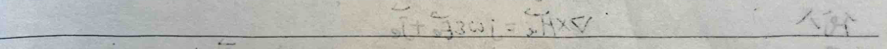
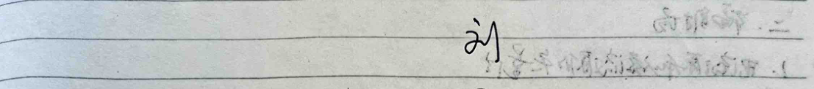


**Review of Antenna**
**I. Introduction**
Radiation: Source → Space Absorption: Space → Source
**II. Radiation Field**
1. Vector Quantities of Electric Current Source and Magnetic Current Source
Let $$\vec{H}_e = \frac{1}{\mu} \nabla \times \vec{A}_e$$ Substitute $$\nabla \times \vec{E}_e = -j\omega \mu \vec{H}_e$$ Result in $$\nabla \times (\vec{E}_e + j\omega \vec{A}_e) = 0$$ Let $$\vec{E}_e + j\omega \vec{A}_e = -\nabla \phi_e$$ Substitute $$\nabla \times \vec{H}_e = j\omega \varepsilon \vec{E}_e + \vec{j}_e$$ Result in $$\frac{1}{\mu} \nabla \times \nabla \times \vec{A}_e = j\omega \varepsilon (-\nabla \phi_e - j\omega \vec{A}_e) + \vec{j}_e$$ That is $$\nabla^2 \vec{A}_e + k^2 \vec{A}_e = -\mu \vec{j}_e + \nabla (\nabla \cdot \vec{A}_e + j\omega \varepsilon \mu \phi_e)$$ Lorentz gauge $$\nabla \cdot \vec{A}_e + j\omega \varepsilon \mu \phi_e = 0$$ Result in $$\nabla^2 \vec{A}_e + k^2 \vec{A}_e = -\mu \vec{j}_e$$ And $$\phi_e = -\frac{1}{j\omega \varepsilon \mu} \nabla \cdot \vec{A}_e$$ Substitute $$\vec{E}_e + j\omega \vec{A}_e = -\nabla \phi_e$$ Result in $$\vec{E}_e = -j\omega \vec{A}_e - \frac{1}{c \omega \varepsilon \mu} \nabla (\nabla \cdot \vec{A}_e)$$ Solve (2) to get $$\vec{A}_e(\vec{r}) = \frac{\mu}{4\pi} \int \frac{\exp(jk|\vec{r}-\vec{r}'|)}{|\vec{r}-\vec{r}'|} \vec{j}(\vec{r}') d\vec{r}'$$ Substitute (5) into (1) and (4) to obtain the electric field $$\vec{E}_e$$ and magnetic field $$\vec{H}_e$$ generated by the electric current source $$\vec{j}_e$$.
Let $$\vec{E}_m = -\frac{1}{\varepsilon} \nabla \times \vec{A}_m$$ Substitute $$\nabla \times \vec{H}_m = j\omega \varepsilon \vec{E}_m$$ Result in $$\nabla \times (\vec{H}_m + j\omega \vec{A}_m) = 0$$ Let $$\vec{H}_m + j\omega \vec{A}_m = -\nabla \phi_m$$ Substitute $$\nabla \times \vec{E}_m = -j\omega \mu \vec{H}_m - \vec{j}_m$$
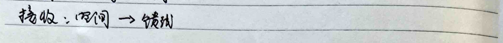

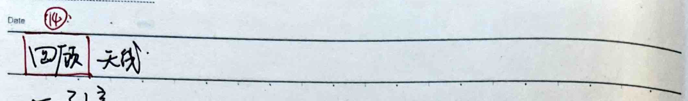
The document appears to be a detailed mathematical derivation related to electromagnetic field theory, specifically focusing on the behavior of magnetic dipole radiation. Here's a summary of the content:
1. **Derivation of Magnetic Dipole Radiation**: - The document starts with the Maxwell's equations in the context of magnetic dipole radiation. - It introduces the magnetic vector potential \( \vec{A}_m \) and the magnetic scalar potential \( \varphi_m \). - The equations are derived using the Lorentz gauge condition. - The magnetic field \( \vec{H}_m \) and electric field \( \vec{E}_m \) are expressed in terms of the magnetic dipole moment \( \vec{J}_m \) and the spatial coordinates. - The far-field expressions for the electric and magnetic fields are derived, showing that the electric field decays as \( \frac{1}{r^2} \) and the magnetic field decays as \( \frac{1}{r} \).
2. **Electric Dipole Radiation**: - The document then shifts to the case of an electric dipole. - The electric vector potential \( \vec{A}(r) \) is expressed in spherical coordinates. - The electric and magnetic fields \( \vec{E}_r \), \( \vec{E}_\theta \), \( \vec{E}_\phi \), \( \vec{H}_r \), \( \vec{H}_\theta \), and \( \vec{H}_\phi \) are derived. - The near-field and far-field expressions are given, with the far-field expressions showing that the electric field decays as \( \frac{1}{r^2} \) and the magnetic field decays as \( \frac{1}{r} \).
The document is a comprehensive study of the radiation patterns of electric and magnetic dipoles, with detailed derivations and expressions for the fields in both near and far regions.
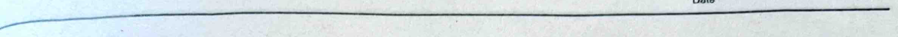
The note appears to be a detailed mathematical derivation related to electromagnetic fields and antenna theory. Here's a translation of the content:
---
By
$$\vec{S} = \frac{1}{2} (\vec{E} \times \vec{H}^*) = \hat{r} S_r + \hat{\theta} S_\theta + \hat{\phi} S_\phi$$
We get
$$\begin{cases} S_r = \frac{1}{2} E_0 H_\phi^* = \frac{\eta}{8} \left( \frac{2\pi}{\lambda} \right)^2 \frac{\sin^2 \theta}{r^2} \left[ 1 - j \left( \frac{1}{kr} \right)^3 \right] \\ S_\theta = -\frac{1}{2} E_r H_\phi^* = j \eta \left[ \frac{k I r^2 \cos \theta \sin \theta}{16 \pi^2 r^3} \right] \left[ 1 + \left( \frac{1}{kr} \right)^2 \right] \end{cases}$$
Total radiated power
$$P = \oint \vec{S} \cdot d\vec{S} = \int_0^{2\pi} d\phi \int_0^\pi \vec{S} \cdot \hat{r} r^2 \sin \theta d\theta$$
$$= \eta \frac{\pi}{3} \left( \frac{2\pi}{\lambda} \right)^2 \left[ 1 - j \left( \frac{1}{kr} \right)^3 \right]$$
Real part is the radiated power
$$P_{rad} = \eta \frac{\pi}{3} \left( \frac{2\pi}{\lambda} \right)^2$$
$$= \frac{1}{2} \left[ \eta \frac{2\pi}{3} \left( \frac{2\pi}{\lambda} \right)^2 \right] I^2$$
$$= \frac{1}{2} \left[ 80 \pi^2 \left( \frac{2\pi}{\lambda} \right)^2 \right] I^2$$
### Three. Antenna Basic Parameters (一)
1. **Radiation Pattern**
#### ① Far Field
In the far field, E, H only have θ, φ components
$$\vec{E} = \hat{\theta} E_\theta + \hat{\phi} E_\phi$$
$$\vec{H} = \hat{\eta} (\hat{\phi} E_\theta - \hat{\theta} E_\phi)$$
$$\vec{S} = \frac{1}{2} (\vec{E} \times \vec{H}^*) = \frac{1}{2} \left( |E_\theta|^2 + |E_\phi|^2 \right)$$
#### ② Far Field of Spherical Wave
$$E_\theta = \frac{f_0 (\cos \phi)}{r} e^{-jkr}$$
$$E_\phi = \frac{f_0 (\cos \phi)}{r} e^{jkr}$$
$$\therefore S_r = \frac{1}{2 \eta r^2} \left( |H_\theta (\cos \phi)|^2 + |H_\phi (\cos \phi)|^2 \right)$$
Radiated power pattern
$$F(\theta, \phi) = r^2 S_r = \frac{1}{2} \left( |f_\theta (\cos \phi)|^2 + |f_\phi (\cos \phi)|^2 \right)$$
Normalized radiation pattern
$$F_n(\theta, \phi) = \frac{F(\theta, \phi)}{F_{max} (\theta, \phi)} = S_n / S_{max}$$
(3D diagram, wavefront diagram)
For dipole antenna
$$F_n(\theta, \phi) = \sin^2 \theta$$
$$\vec{H} \text{ plane} \quad \phi = const$$
$$\theta = 90^\circ$$
---
This translation preserves the mathematical formulas and the structure of the handwritten notes.
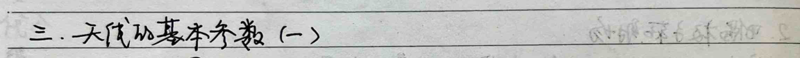
1. Solid Angle - Total Solid Angle: Ω_T = ∫_Ω F_T(θ,φ) dΩ - Main Solid Angle: Ω_M = ∫_Ω F_M(θ,φ) dΩ - Normal Solid Angle: Ω_N = ∫_Ω F_N(θ,φ) dΩ
2. Directionality - Directivity: D(θ,φ) = S_T(θ,φ) / P_T / 4πr² - If antenna is lossless: D(θ,φ) = 4π S_T(θ,φ) r² / P_T - If space is lossless: D(θ,φ) = 4π S_T(θ,φ) r² / ∫_Ω S_T(θ,φ) r² dΩ - D(θ,φ) = 4π F(θ,φ) / ∫_Ω F(θ,φ) dΩ - D(θ,φ) = 4π F(θ,φ) / ∫_Ω F(θ,φ) dΩ - D(θ,φ) = 4π F(θ,φ) / Ω_T - Maximum Directivity: D₀ = 4π S_T(θ,φ) = 1 D(θ,φ) - For dipole antenna: Ω_T = 8 - 38 = Ω_M, D₀ = 1.5
3. Gain - If antenna is lossless: η_e = P_e / P_m - P_e is the power delivered to the antenna.
4. Polarization - Maximum Gain Direction: Polarization of the antenna
5. Input Impedance - Input Impedance: Dependent on loss resistance and radiation resistance
### Four. Five. Antennas
#### 1. Symmetric Antenna
- **Far-field radiation pattern of a dipole antenna**
$$ dE_0 = j\eta \frac{kI(z')e^{-jkz}}{4\pi r_0} \sin\theta \, dz' $$
$$ I(z') = \begin{cases} I_0 \sin\left[k\left(\frac{1}{2} - z'\right)\right] & 0 \leq z' \leq \frac{1}{2} \\ I_0 \sin\left[k\left(\frac{1}{2} + z'\right)\right] & -\frac{1}{2} \leq z' \leq 0 \end{cases} $$
$$ E_0 = j\eta \frac{ke^{-jkz_0}}{4\pi r_0} \sin\theta \int_{-\frac{1}{2}}^{\frac{1}{2}} \sin\left[k\left(\frac{1}{2} - z'\right)\right] e^{jkz_0\cos\theta} \, dz' $$
$$ H_\theta = \frac{E_0}{\eta} $$
- **Half-wave dipole: p = λ/2**
$$ E_0 = j\eta \frac{Z_0 e^{-jkz_0}}{2\pi r_0} \left[\frac{\cos\left(\frac{\pi}{2}\cos\theta\right)}{\sin\theta}\right] $$
$$ H_\theta = j\frac{Z_0 e^{-jkz_0}}{2\pi r_0} \left[\frac{\cos\left(\frac{\pi}{2}\cos\theta\right)}{\sin\theta}\right] $$
$$ F_\theta(\theta, \phi) = \frac{\cos\left(\frac{\pi}{2}\cos\theta\right)}{\sin\theta} \quad \theta = \frac{\pi}{2} $$
$$ S_r = \frac{1}{2\eta} |E_0|^2 = \frac{2\eta Z_0^2}{(4\pi r_0)^2} \left[\frac{\cos\left(\frac{\pi}{2}\cos\theta\right)}{\sin\theta}\right]^2 $$
$$ P_{rad} = \int_{4\pi} S_r r_0^2 d\Omega = 0.609 \frac{\eta Z_0^2}{2\pi} $$
$$ R_{rad} = \frac{P_{rad}}{2\pi Z_0} = \frac{0.609\eta}{\pi} \approx 73\Omega $$
$$ Z_{in} \approx R_{rad} = 73\Omega $$
#### 2. Dipole Array
- **Two-element array**
$$ E_\theta = E_{\theta 1} + E_{\theta 2} = j\frac{\eta k Z_0}{4\pi} \left[\frac{e^{-j\left(kr_1 - \frac{\lambda}{2}\right)} \sin\theta}{r_1} + \frac{e^{-j\left(kr_2 + \frac{\lambda}{2}\right)} \sin\theta}{r_2}\right] $$
No. Date.
$$\approx j\frac{\eta kZ\varphi}{4\pi r}e^{jkr}\sin\theta\left[e^{j\left(kd\cos\theta+\beta\right)/2}+e^{-j\left(kd\cos\theta+\beta\right)/2}\right]$$ $$=j\frac{\eta kZ\varphi}{4\pi r}e^{jkr}\sin\theta\cdot2\cdot\cos\left(kd\cos\theta+\beta\right)/2$$ $$=j\frac{\eta kZ\varphi}{4\pi r}e^{jkr}f(\theta,\varphi)$$
2. N-element array $$f_A(\psi)=a_0+a_1e^{j\psi}+\ldots+a_Ne^{j(N-1)\psi},\quad\psi=kd\cos\theta+\beta$$ When equal amplitude: $$f_A(\psi)=\frac{\sin\left(N\psi/2\right)}{\sin\left(\psi/2\right)}$$ Normalized: $$f_A(\psi)=\frac{1}{N}\frac{\sin\left(N\psi/2\right)}{\sin\left(\psi/2\right)}=\text{Sa}\left(N\psi/2\right)$$ Main lobe maximum: $$\psi=0$$ Side lobe zeros: $$\frac{N\psi}{2}=p\pi,\quad p=\pm1,\pm2,\ldots,\pm\frac{N}{2}$$ Side lobe maximum: $$\frac{N\psi}{2}=2p+1\pi,\quad p=1,\pm2,\ldots,-\frac{N}{2}$$
7. Spherical wave $$\begin{cases} \text{Azimuthal: } r\approx r_0-r'cos\hat{\beta}=r_0-\vec{r'}\cdot\hat{r} \\ \text{Radial: } r\approx r_0 \end{cases}$$ $$\begin{cases} \vec{A_e}=\frac{\mu}{4\pi}\int_S\vec{J_{es}}\frac{e^{jkr}}{r}ds'\approx\frac{\mu e^{jkr_0}}{4\pi r_0}\int_S\vec{J_{es}}\cdot e^{jkr_0}ds' \\ \vec{A_m}=\frac{\varepsilon}{4\pi}\int_S\vec{J_{ms}}\frac{e^{jkr}}{r}ds'\approx\frac{\varepsilon e^{-jkr_0}}{4\pi r_0}\int_S\vec{J_{ms}}\cdot e^{jkr_0}ds' \end{cases}$$ $$r'cos\hat{\beta}=\vec{r'}\cdot\hat{r}=x'cos\theta cos\varphi+y'sin\theta sin\varphi$$ By the principle of equivalent current density: $$\vec{J_{ms}}=-2\hat{z}\times\vec{E_a},\quad\vec{J_{es}}=0$$
Rectangular wave, uniform field strength distribution: $$\vec{J_{ms}}=-2\hat{z}\times\vec{E_a}=\hat{x}\cdot2\vec{E_0}$$ $$\vec{A_m}=\hat{x}\frac{\varepsilon e^{-jkr_0}}{4\pi r_0}\int_{-\frac{a}{2}}^{\frac{a}{2}}\int_{-\frac{b}{2}}^{\frac{b}{2}}2\vec{E_0}e^{jk\left(x'sin\theta cos\varphi+y'sin\theta sin\varphi\right)}dx'dy'$$ $$\vec{E_\varphi}\approx-j\omega\eta A_{m\varphi}=j\frac{\omega\delta kE_0e^{-jkr_0}}{2\pi r_0}\cos\varphi\cos\varphi\text{Sa}\left(\frac{k\delta}{2}sin\theta cos\varphi\right)\text{Sa}\left(\frac{k\delta}{2}sin\theta sin\varphi\right)$$ $$\vec{H_\varphi}\approx-\vec{E_\varphi}/\eta$$
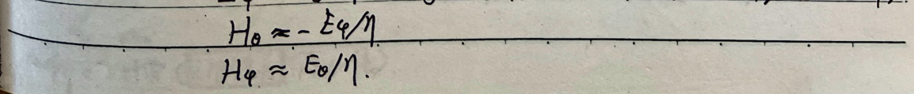
13. Microstrip Antenna 1. Rectangular Microstrip Structure
$$\lambda << \lambda$$
$$\epsilon_r > 1$$
2. Advantages a. Has a planar structure, suitable for missiles, satellites, and other flat objects. b. Suitable for printed circuit board production. c. Suitable for forming a planar array. d. Wide bandwidth, low power consumption, low radiation efficiency.
3. Analysis Method of Rectangular Microstrip Antenna and Radiation Diagrams: Transmission Line Model Approximation
$$\lambda = \frac{\lambda}{2}$$
$$\text{Electric Field Distribution Diagram}$$
$$\text{Radiation Diagram}$$
$$\Delta \phi = 90^\circ, \text{Backward}$$
$$\text{Wave Propagation}$$
$$f_{\text{Total}} = f_{\text{Backward}}(0) \cdot 2 = S \alpha \left(\frac{k a}{2} \cos \theta\right) - 2 \cos \left(\frac{k a}{2} \cos \theta\right)$$
$$f_{\text{Total}} = f_{\text{Backward}}(0) \cdot 2 = S \alpha \left(\frac{k a}{2} \cos \theta\right) - 2 \cos \left(\frac{k a}{2} \cos \theta\right)$$
$$\Delta \phi = 90^\circ, \text{Backward}$$
$$\text{Wave Propagation}$$
$$f_{\text{Total}} = f_{\text{Backward}}(0) \cdot 2 = S \alpha \left(\frac{k a}{2} \cos \theta\right) - 2 \cos \left(\frac{k a}{2} \cos \theta\right)$$
$$f_{\text{Total}} = f_{\text{Backward}}(0) \cdot 2 = S \alpha \left(\frac{k a}{2} \cos \theta\right) - 2 \cos \left(\frac{k a}{2} \cos \theta\right)$$
4. Impedance Matching and Input Impedance
A. Impedance Matching Circuit and Input Impedance of a Half-Wave Dipole
$$\frac{R_{c}}{2} \rightarrow \left( Z_{c} \right)$$
$$\text{Input Impedance} \quad Z_{in} = \frac{R_{c}'}{2} \quad (\because l = \frac{\lambda}{2}, \text{antenna resonant when } X_{in} = 0, \text{two } R_{c}' \text{ in parallel})$$
$$\begin{cases} R_{c}' \approx 120 \frac{\lambda}{W} \Omega \quad (W \geq 2\lambda) \\ R_{c}' = 90 (\frac{\lambda}{W})^2 \Omega \quad (W < 0.35\lambda) \\ R_{c}' \approx \frac{W}{120\lambda - \frac{1}{60\pi^2}} \Omega \quad (0.35\lambda \leq W < 2\lambda) \end{cases}$$
Changing $R_{c}'$ can adjust $W$, thus adjusting the resonant frequency.
5. Impedance Matching Methods
a) Side Matching: $Z_{c} = 50\Omega$ (half-wave dipole, half-wavelength)
b) Bottom Matching: $Z_{c} = 50\Omega$ (half-wavelength dipole, half-wavelength)
6. Circular Polarization Techniques
a) T-shaped Branch Matching
b) Branch Circuit Matching

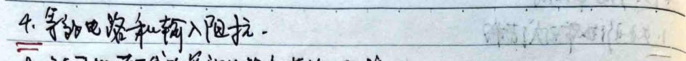

c) 4-element circularly polarized antenna
7. Circular polarization measurement methods. - Rotating linearly polarized antenna to measure the strength of the electric field at different angles. 8. Broadband, dual-band antennas. - Sliding method for broadband: - When the two boards are close, it's broadband. - When the two boards are far apart, it's dual-band. 9. Antenna array. - 16-element linear antenna, T-shaped branch and parallel connection.
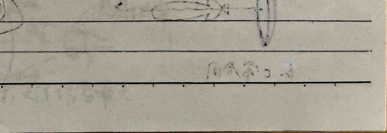

1. Introduction. 2. General properties of parabolic reflectors (applicable to microwave and millimeter wave bands): - Reflection of parallel waves: The incident wave is reflected at the focus. - The distance from the focus to the parabolic reflector is 2f.
2. Various forms of parabolic reflectors. (a) Pin-shaped beam. (b) Vertical fan-shaped beam. (c) Horizontal fan-shaped beam. (d) Parabolic cylinder.
Horizontal fan-shaped beam: Through the angle of incidence. Vertical fan-shaped beam: Through the angle of incidence.
3. Methods to Reduce Wind Resistance and Weight
Metal Sheet Structure: $$E = \frac{1}{n}$$ Vertical Polarization or Reflection: Wavelength shorter, resistance smaller
4. Different Distances of Antenna Arrays
(a) Medium Distance $$\lambda_0 = \frac{\lambda}{2}, f/D = 0.25$$
(b) Long Distance $$\lambda_0 < \frac{\lambda}{2}, f/D > 0.25$$
(c) Short Distance $$\lambda_0 > \frac{\lambda}{2}, f/D < 0.25$$
5. Different Distances of Surface Distribution (Emission Distribution)
(a) Medium Distance $$\text{Polarization: At the edge}$$
(b) Long Distance $$\text{Cross-polarization is less}$$
(c) Short Distance $$\text{There is reverse polarization, less}$$
6. Load Power and Radiation Power
$$\eta_A = \frac{P_{\text{load}}}{P_{\text{rad}}}$$
7. Interference of sound sources and elimination methods. Problem: Reflection of sound sources
1. Install a hole in the sound source. 2. Install a sound-absorbing plate before installation. 3. Sound source shielding method. S = π²C (sound source) d = √(4π²), l = (2n+1)π/4 - π/4. Φ = a1(π/4)² + a2(π/4) - a3(π/4)
8. Find the far-field radiation pattern of a parabolic antenna
I. Near-field method. E + H = 0 E + H ∈ plane of the hole. Jes = H × Ha = Jms = H × E A × A E + H
a. Find the surface E and H of the hole and the hole's reflection characteristics. b. The plane E and H of the hole is not zero. c. Use the principle of electric field source and image theorem to find Jes and Jms. d. Use Jms to find Am and Jms to find A. e. Use Am and A to find E and H.
II. Mirror surface current density: J = (n × H) + (n × H) = 2(n × H) + (n × H) = 2(n × H) + (n × H) J = (n × H) + (n × H) J = (n × H) + (n × H) J = (n × H) + (n × H) J = (n × H) + (n × H) J = (n × H) + (n × H) J = (n × H) + (n × H) J = (n × H) + (n × H) J = (n × H) + (n × H) J = (n × H) + (n × H) J = (n × H) + (n × H) J = (n × H) + (n × H) J = (n × H) + (n × H) J = (n × H) + (n × H) J = (n × H) + (n × H) J = (n × H) + (n × H) J = (n × H) + (n × H) J = (n × H) + (n × H) J = (n × H) + (n × H) J = (n × H) + (n × H) J = (n × H) + (n × H) J = (n × H) + (n × H) J = (n × H) + (n × H) J = (n × H) + (n × H) J = (n × H) + (n × H) J = (n × H) + (n × H) J = (n × H) + (n × H) J = (n × H) + (n × H) J = (n × H) + (n × H) J = (n × H) + (n × H) J = (n × H) + (n × H) J = (n × H) + (n × H) J = (n × H) + (n × H) J = (n × H) + (n × H) J = (n × H) + (n × H) J = (n × H) + (n × H) J = (n × H) + (n × H) J = (n × H) + (n × H) J = (n × H) + (n × H) J = (n × H) + (n × H) J = (n × H) + (n × H) J = (n × H) + (n × H) J = (n × H) + (n × H) J = (n × H) + (n × H) J = (n × H) + (n × H) J = (n × H) + (n × H) J = (n × H) + (n × H) J = (n × H) + (n × H) J = (n × H) + (n × H) J = (n × H) + (n × H) J = (n × H) + (n × H) J = (n × H) + (n × H) J = (n × H) + (n × H) J = (n × H) + (n × H) J = (n × H) + (n × H) J = (n × H) + (n × H) J = (n × H) + (n × H) J = (n × H) + (n × H) J = (n × H) + (n × H) J = (n × H) + (n × H) J = (n × H) + (n × H) J = (n × H) + (n × H) J = (n × H) + (n × H) J = (n × H) + (n × H) J = (n × H) + (n × H) J = (n × H) + (n × H) J = (n × H) + (n × H) J = (n × H) + (n × H) J = (n × H) + (n × H) J = (n × H) + (n × H) J = (n × H) + (n × H) J = (n × H) + (n × H) J = (n × H) + (n × H) J = (n × H) + (n × H) J = (n × H) + (n × H) J = (n × H) + (n × H) J = (n × H) + (n × H) J = (n × H) + (n × H) J = (n × H) + (n × H) J = (n × H) + (n × H) J = (n × H) + (n × H) J = (n × H) + (n × H) J = (n × H) + (n × H) J = (n × H) + (n × H) J = (n × H) + (n × H) J = (n × H) + (n × H) J = (n × H) + (n × H) J = (n × H) + (n × H) J = (n × H) + (n × H) J = (n × H) + (n × H) J = (n × H) + (n × H) J = (n × H) + (n × H) J = (n × H) + (n × H) J = (n × H) + (n × H) J
**15. Cassegrainian Telescope**
**1. Principle of Structure and Source**
(1) Real Source (10 to 100 wavelengths) (2) Virtual Source (3) Secondary Reflective Surface (Double Concave) (4) Primary Reflective Surface (Double Convex)
**2. Advantages:**
1) Field distribution is optimal, with two reflective surfaces adjustable. 2) Compact structure, low weight - lightweight 3) Good resistance - double convex for broad reflection. 4) "Long focal distance, parabolic reflector performance" and "mechanical performance" are good.
**3. Two Analysis Methods:**
a. Virtual Source Method (Equivalent Source Method) b. Parabolic Reflective Method
**4. Secondary Reflective Surface Adjustment:**
The distance can be adjusted by rotating the "primary convex lens" 90°.
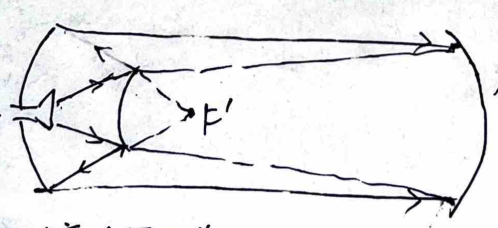
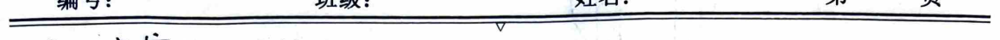
5. Deformed Cassegrain Antenna
平面: Polarization 90°
6.22 Wednesday afternoon 2:30-4:30
Meeting Room
Question: Wei 1003# 62773748 June 21
(1) Return the original drawing of the antenna
(2) The antenna is a parabolic dish antenna
(3) The antenna is a parabolic dish antenna
(4) The antenna is a parabolic dish antenna
(5) The antenna is a parabolic dish antenna
(6) The antenna is a parabolic dish antenna
(7) The antenna is a parabolic dish antenna
(8) The antenna is a parabolic dish antenna
(9) The antenna is a parabolic dish antenna
(10) The antenna is a parabolic dish antenna
(11) The antenna is a parabolic dish antenna
(12) The antenna is a parabolic dish antenna
(13) The antenna is a parabolic dish antenna
(14) The antenna is a parabolic dish antenna
(15) The antenna is a parabolic dish antenna
(16) The antenna is a parabolic dish antenna
(17) The antenna is a parabolic dish antenna
(18) The antenna is a parabolic dish antenna
(19) The antenna is a parabolic dish antenna
(20) The antenna is a parabolic dish antenna
(21) The antenna is a parabolic dish antenna
(22) The antenna is a parabolic dish antenna
(23) The antenna is a parabolic dish antenna
(24) The antenna is a parabolic dish antenna
(25) The antenna is a parabolic dish antenna
(26) The antenna is a parabolic dish antenna
(27) The antenna is a parabolic dish antenna
(28) The antenna is a parabolic dish antenna
(29) The antenna is a parabolic dish antenna
(30) The antenna is a parabolic dish antenna
(31) The antenna is a parabolic dish antenna
(32) The antenna is a parabolic dish antenna
(33) The antenna is a parabolic dish antenna
(34) The antenna is a parabolic dish antenna
(35) The antenna is a parabolic dish antenna
(36) The antenna is a parabolic dish antenna
(37) The antenna is a parabolic dish antenna
(38) The antenna is a parabolic dish antenna
(39) The antenna is a parabolic dish antenna
(40) The antenna is a parabolic dish antenna
(41) The antenna is a parabolic dish antenna
(42) The antenna is a parabolic dish antenna
(43) The antenna is a parabolic dish antenna
(44) The antenna is a parabolic dish antenna
(45) The antenna is a parabolic dish antenna
(46) The antenna is a parabolic dish antenna
(47) The antenna is a parabolic dish antenna
(48) The antenna is a parabolic dish antenna
(49) The antenna is a parabolic dish antenna
(50) The antenna is a parabolic dish antenna
(51) The antenna is a parabolic dish antenna
(52) The antenna is a parabolic dish antenna
(53) The antenna is a parabolic dish antenna
(54) The antenna is a parabolic dish antenna
(55) The antenna is a parabolic dish antenna
(56) The antenna is a parabolic dish antenna
(57) The antenna is a parabolic dish antenna
(58) The antenna is a parabolic dish antenna
(59) The antenna is a parabolic dish antenna
(60) The antenna is a parabolic dish antenna
(61) The antenna is a parabolic dish antenna
(62) The antenna is a parabolic dish antenna
(63) The antenna is a parabolic dish antenna
(64) The antenna is a parabolic dish antenna
(65) The antenna is a parabolic dish antenna
(66) The antenna is a parabolic dish antenna
(67) The antenna is a parabolic dish antenna
(68) The antenna is a parabolic dish antenna
(69) The antenna is a parabolic dish antenna
(70) The antenna is a parabolic dish antenna
(71) The antenna is a parabolic dish antenna
(72) The antenna is a parabolic dish antenna
(73) The antenna is a parabolic dish antenna
(74) The antenna is a parabolic dish antenna
(75) The antenna is a parabolic dish antenna
(76) The antenna is a parabolic dish antenna
(77) The antenna is a parabolic dish antenna
(78) The antenna is a parabolic dish antenna
(79) The antenna is a parabolic dish antenna
(80) The antenna is a parabolic dish antenna
(81) The antenna is a parabolic dish antenna
(82) The antenna is a parabolic dish antenna
(83) The antenna is a parabolic dish antenna
(84) The antenna is a parabolic dish antenna
(85) The antenna is a parabolic dish antenna
(86) The antenna is a parabolic dish antenna
(87) The antenna is a parabolic dish antenna
(88) The antenna is a parabolic dish antenna
(89) The antenna is a parabolic dish antenna
(90) The antenna is a parabolic dish antenna
(91) The antenna is a parabolic dish antenna
(92) The antenna is a parabolic dish antenna
(93) The antenna is a parabolic dish antenna
(94) The antenna is a parabolic dish antenna
(95) The antenna is a parabolic dish antenna
(96) The antenna is a parabolic dish antenna
(97) The antenna is a parabolic dish antenna
(98) The antenna is a parabolic dish antenna
(99) The antenna is a parabolic dish antenna
(100) The antenna is a parabolic dish antenna
(101) The antenna is a parabolic dish antenna
(102) The antenna is a parabolic dish antenna
(103) The antenna is a parabolic dish antenna
(104) The antenna is a parabolic dish antenna
(105) The antenna is a parabolic dish antenna
(106) The antenna is a parabolic dish antenna
(107) The antenna is a parabolic dish antenna
(108) The antenna is a parabolic dish antenna
(109) The antenna is a parabolic dish antenna
(110) The antenna is a parabolic dish antenna
(111) The

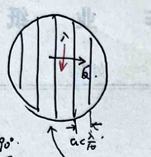
15
**Initial Review**
**1. Transfer Function:**
$$ \frac{Z_{1}dz}{R_{1}dz} \rightarrow Z $$
**2. Frequency Domain:**
$$ V(j\omega) = -\frac{1}{j\omega C} I(j\omega) $$
$$ I(j\omega) = j\omega L I(j\omega) $$
$$ R(j\omega) = R I(j\omega) $$
**3. Differential Equation in Frequency Domain:**
$$ dV(j\omega, z) = I(j\omega)j\omega L_{1}dz $$
$$ dI(j\omega, z) = V(j\omega, z)j\omega C_{1}dz $$
**4. Solution:**
$$ V(j\omega, z) = V_{0+}(j\omega)e^{j\omega\sqrt{L_{1}C_{1}}z} + V_{0-}(j\omega)e^{-j\omega\sqrt{L_{1}C_{1}}z} $$
$$ I(j\omega, z) = I_{0+}(j\omega)e^{j\omega\sqrt{L_{1}C_{1}}z} + I_{0-}(j\omega)e^{-j\omega\sqrt{L_{1}C_{1}}z} $$
$$ Z_{c} = \frac{1}{\sqrt{L_{1}C_{1}}}, \quad \omega = \frac{1}{\sqrt{L_{1}C_{1}}} $$
$$ V_{+}(j\omega, z) \triangleq V_{0+}(j\omega)e^{j\omega\sqrt{L_{1}C_{1}}z}, \quad V_{-}(j\omega, z) \triangleq V_{0-}(j\omega)e^{-j\omega\sqrt{L_{1}C_{1}}z} $$
$$ I_{+}(j\omega, z) \triangleq \frac{V_{+}(j\omega, z)}{Z_{c}}, \quad I_{-}(j\omega, z) \triangleq \frac{V_{-}(j\omega, z)}{Z_{c}} $$
**5. Then:**
$$ V(j\omega, z) = V_{+}(j\omega, z) + V_{-}(j\omega, z) $$
$$ I(j\omega, z) = I_{+}(j\omega, z) + I_{-}(j\omega, z) $$
**6. Boundary Conditions:**
$$ \left\{ \begin{array}{l} V(j\omega, 0) = V_{0+}(j\omega) + V_{0-}(j\omega) = I(j\omega, 0)Z_{c}(j\omega) \\ Z(j\omega, 0) = \frac{1}{Z_{c}}\left[V_{0+}(j\omega) - V_{0-}(j\omega)e^{j\omega\sqrt{L_{1}C_{1}}0}\right] \end{array} \right. $$
$$ \left\{ \begin{array}{l} V(j\omega, l) = V_{0+}(j\omega)e^{j\omega\sqrt{L_{1}C_{1}}l} + V_{0-}(j\omega)e^{-j\omega\sqrt{L_{1}C_{1}}l} = V_{0+}(j\omega) - V_{0-}(j\omega)e^{j\omega\sqrt{L_{1}C_{1}}l} \\ Z(j\omega, l) = \frac{1}{Z_{c}}\left[V_{0+}(j\omega)e^{j\omega\sqrt{L_{1}C_{1}}l} - V_{0-}(j\omega)e^{-j\omega\sqrt{L_{1}C_{1}}l}\right] \end{array} \right. $$
**7. Solve:**
$$ \left[\frac{V_{0+}(j\omega) + V_{0-}(j\omega)}{Z(j\omega)}\right] = \left[\frac{V_{0+}(j\omega) - V_{0-}(j\omega)e^{j\omega\sqrt{L_{1}C_{1}}l}}{Z_{c}}\right] $$
$$ \left[\frac{V_{0+}(j\omega) + V_{0-}(j\omega)}{Z(j\omega)}\right] = \left[\frac{V_{0+}(j\omega) - V_{0-}(j\omega)e^{j\omega\sqrt{L_{1}C_{1}}l}}{Z_{c}}\right] $$

**Two. Time-domain operation rules: (time domain: V as variable, w as constant).**
**Electric field:** $$V = V_0 \cos(\omega t) = Re(V_0 e^{j\omega t}) \quad \text{,} \quad \tilde{V} = V_0 e^{j\omega t}$$ $$I = I_0 \cos(\omega t) = Re(I_0 e^{j\omega t}) \quad \text{,} \quad \tilde{I} = I_0 e^{j\omega t}$$
**Capacitance:** $$\tilde{I}(t) = C \frac{d\tilde{V}(t)}{dt} = j\omega C \cdot Re(V_0 e^{j\omega t})$$ $$= -j\omega C \cdot V_0 e^{j\omega t}$$ $$= Re(j\omega C \cdot V_0 e^{j\omega t})$$ $$\tilde{I}(t) = j\omega C \cdot V_0 e^{j\omega t} = j\omega C \cdot \tilde{V}$$
**Inductance:** $$V(t) = L \frac{d\tilde{I}(t)}{dt}$$ $$= Re(j\omega L \cdot I_0 e^{j\omega t})$$ $$\tilde{V}(t) = j\omega L \cdot \tilde{I}$$
**Resistance:** $$V(t) = R \tilde{I}(t)$$ $$\tilde{V}(t) = R \tilde{I}(t)$$
$\because e^{j\omega t}$ factor is linearly invariant, $\therefore \tilde{V}(t, t), \tilde{I}(t, t)$ can be directly substituted into the original formula. $\therefore$ The above rules are the rules of the field, the rules of the field, the rules of the field, the rules of the field, the rules of the field, the rules of the field, the rules of the field, the rules of the field, the rules of the field, the rules of the field, the rules of the field, the rules of the field, the rules of the field, the rules of the field, the rules of the field, the rules of the field, the rules of the field, the rules of the field, the rules of the field, the rules of the field, the rules of the field, the rules of the field, the rules of the field, the rules of the field, the rules of the field, the rules of the field, the rules of the field, the rules of the field, the rules of the field, the rules of the field, the rules of the field, the rules of the field, the rules of the field, the rules of the field, the rules of the field, the rules of the field, the rules of the field, the rules of the field, the rules of the field, the rules of the field, the rules of the field, the rules of the field, the rules of the field, the rules of the field, the rules of the field, the rules of the field, the rules of the field, the rules of the field, the rules of the field, the rules of the field, the rules of the field, the rules of the field, the rules of the field, the rules of the field, the rules of the field, the rules of the field, the rules of the field, the rules of the field, the rules of the field, the rules of the field, the rules of the field, the rules of the field, the rules of the field, the rules of the field, the rules of the field, the rules of the field, the rules of the field, the rules of the field, the rules of the field, the rules of the field, the rules of the field, the rules of the field, the rules of the field, the rules of the field, the rules of the field, the rules of the field, the rules of the field, the rules of the field, the rules of the field, the rules of the field, the rules of the field, the rules of the field, the rules of the field, the rules of the field, the rules of the field, the rules of the field, the rules of the field, the rules of the field, the rules of the field, the rules of the field, the rules of the field, the rules of the field, the rules of the field, the rules of the field, the rules of the field, the rules of the field, the rules of the field, the rules of the field, the rules of the field, the rules of the field, the rules of the field, the rules of the field, the rules of the field, the rules of the field, the rules of the field, the rules of the field, the rules of the field, the rules of the field, the rules of the field, the rules of the field, the rules of the field, the rules of the field, the rules of the field, the rules of the field, the rules of the field, the rules of the field, the rules of the field, the rules of the field, the rules of the field, the rules of the field, the rules of the field, the rules of the field, the rules of the field, the rules of the field, the rules of the field, the rules of the field, the rules of the field, the rules of the field, the rules of the field, the rules of the field, the rules of the field, the rules of the field, the rules of the field, the rules of the field, the rules of the field, the rules of the field, the rules of the field, the rules of the field, the rules of the field, the rules of the field, the rules of the field, the rules of the field, the rules of the field, the rules of the field, the rules of the field, the rules of the field, the rules of the field, the rules of the field, the rules of the field, the rules of the field, the rules of the field, the rules of the field, the rules of the field, the rules of the field, the rules of the field, the rules of the field, the rules of the field, the rules of the field, the rules of the field, the rules of the field, the rules of the field, the rules of the field, the rules of the field, the rules of the field, the rules of the field, the rules of the field, the rules of the field, the rules of the field, the rules of the field, the rules of the field, the rules of the field, the rules of the field, the rules of the field, the rules of the field, the rules of the field, the rules of the field, the rules of the field, the rules
N-terminal network definition
$$\begin{pmatrix} b_1 \\ b_n \end{pmatrix} = \begin{pmatrix} s_{11} & s_{1n} \\ s_{n1} & s_{nn} \end{pmatrix} \begin{pmatrix} a_1 \\ a_n \end{pmatrix}$$
$$\text{For i-j matching: } s_{ij} = s_{ji}, [s] = [s]^T$$
$$\text{For unitary: } [s]^H [s] = I$$
Two-terminal network
$$a_1 \rightarrow \frac{u_1}{v_1} \rightarrow \frac{u_2}{v_2} \rightarrow b_2$$
1) Symmetry: \( s_{12} = s_{21} \)
2) Magnitude: \( |s_{12}| = |s_{21}| > |s_{11}| = |s_{22}| \), \( |s_{11}|^2 + |s_{22}|^2 = 1 \), \( |s_{12}|^2 + |s_{21}|^2 = 1 \)
1) Impedance matching condition 2) Impedance matching, voltage transmission coefficient becomes 1
\( |s_{11}| = |s_{22}| = 0 \), \( |s_{12}| = |s_{21}| = 1 \)
2) Single-directional isolation, isolation is bidirectional
\( |s_{12}| = |s_{21}| = 0 \), \( |s_{11}| = |s_{22}| = 1 \)
3) Bidirectional isolation, complete reflection
\( |s_{12}| = |s_{21}| = 0 \), \( |s_{11}| = |s_{22}| = 1 \)
Symmetry: \( s_{11} = s_{22} \), \( s_{12} = s_{21} \)
1) Characteristic equation: \( s_{11} - s_j \quad s_{12} \quad [u_i] = 0 \)
2) Characteristic values: \( s_1 = s_{11} + s_{22} \Rightarrow s_{11} = \frac{s_1 + s_2}{2} \), \( s_2 = s_{11} - s_{12} \), \( s_{12} = \frac{s_1 - s_2}{2} \)
Solution: \( s_1 \Rightarrow u_1 = \frac{1}{\sqrt{2}} (1, 1)^T \), \( s_2 \Rightarrow u_2 = \frac{1}{\sqrt{2}} (1, -1)^T \)
Meaning: The two components of the two-terminal network have the same phase. \( b = 2s_j u_1 = s_1 u_1 \), the reflection coefficient is \( s_1 \). The two components of the two-terminal network have opposite phases. \( b = 2s_j u_2 = s_2 u_2 \), the reflection coefficient is \( s_2 \).
The two components of the two-terminal network have the same phase and the same direction. The two components of the two-terminal network have opposite phases and opposite directions.

(4) Indicators: 1) Voltage transmission coefficient \( T_v = S_{21} \) 2) Power transmission coefficient \( T_p = |S_{21}|^2 \) 3) Insertion loss \( L = \frac{1}{|S_{21}|^2} \) 4) Insertion phase \( \phi = \arg S_{21} \) 5) Group delay \( t_d = \frac{d}{d\omega} \phi \) 6) Input impedance ratio \( \rho = \frac{1 + |T_{11}|}{1 - |T_{11}|} = \frac{1 + |S_{11}|}{1 - |S_{11}|} \)
(5) Impedance matrix: Series: \( [Z] = \sum [z_i] \) \( V_p = V_q = 0 \): Effective series Parallel: \( [Y] = \sum [y_i] \) \( V_p = V_q = 0 \): Effective parallel Matrix knowledge: Series: \( [A] = \Pi [A_i] \) \( V_1, V_2, V_3 \) (indicating \( a_1, b_1, a_2, b_2 \) respectively) Transmission matrix: Series: \( [T] = \Pi [t_i] \) \( a_1, b_1, a_2, b_2 \) (indicating \( a_1, b_1, a_2, b_2 \) respectively) Series-parallel matrix: Series: \( [H] = \sum [h_i] \) Parallel: \( [G] = \sum [g_i] \)
IV. Waveguide to transmission line (time delay, phase, power loss) 1. Cross relationship. (Example: \( \nabla = \nabla_1 + \nabla_2 \); \( \nabla = \nabla_1 + \nabla_2 \)) Waveguide (wave number \( k_2 \)): \( \vec{H}_T = -\frac{jk_2}{k_1^2 - k_2^2} \nabla \times \vec{E}_2 - jk_2 \nabla \times \vec{H}_2 \) \( \vec{E}_T = j\omega \mu \frac{1}{k_2^2} \nabla \times \nabla \times \vec{H}_2 \) Transmission line (wave number \( k_1 \)): \( \vec{H}_T = j\omega \epsilon \frac{1}{k_1^2 - k_2^2} \nabla \times \vec{E}_2 + jk_2 \nabla \times \vec{H}_2 \) \( \vec{E}_T = -j\omega \mu \frac{1}{k_1^2 - k_2^2} \nabla \times \nabla \times \vec{H}_2 + jk_2 \nabla \times \vec{H}_2 \)
2. TE mode: \( E_2 = 0 \) Waveguide: \( \vec{H}_T = -\frac{jk_2}{k_1^2 - k_2^2} \nabla \times \vec{H}_2 \) \( \vec{E}_T = -\frac{j\omega \mu}{k_1^2 - k_2^2} \nabla \times \nabla \times \vec{H}_2 \) Transmission line: \( \vec{H}_T = -\frac{j\omega \mu}{k_1^2 - k_2^2} \nabla \times \nabla \times \vec{H}_2 \) \( \vec{E}_T = -\frac{j\omega \mu}{k_1^2 - k_2^2} \nabla \times \nabla \times \vec{H}_2 \)
Boundary condition: \( \frac{\partial H_2}{\partial n} \mid_{z=0} = 0 \)
The note discusses wave propagation in a medium, focusing on the TE and TM modes. It starts by defining the wave equation for the electric and magnetic fields in a waveguide. The TE mode is defined as having zero magnetic field component, while the TM mode has zero electric field component. The note then proceeds to derive the wave equations for both modes, showing that the wave equation for the electric field in the TE mode is:
$$\nabla^2 E_z + k^2 E_z = 0$$
And for the TM mode:
$$\nabla^2 H_z + k^2 H_z = 0$$
The note also introduces the concept of the wave number \(k\) and the phase constant \(\beta\), and discusses the boundary conditions at the walls of the waveguide. It then moves on to discuss the propagation constants for TE and TM modes, which are related to the wave number and the dielectric constant of the medium. The note concludes by discussing the relationship between the propagation constants and the frequency of the wave, leading to the expression for the cutoff frequency \(f_c\):
$$f_c = \frac{k_c \cdot c}{2\pi}$$
Where \(k_c\) is the cutoff wave number and \(c\) is the speed of light.
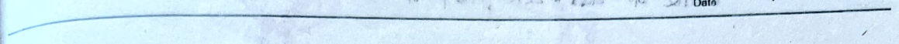
6. Transmission line description and analysis.
According to 1, 2, 3, each mode has orthogonality. For each mode, the separation of variables results in: $$\left\{\begin{array}{l} \frac{\partial^2}{\partial z^2} E_T + k^2 E_T = 0 \Rightarrow E_{T\pm}(T, z) = E_{T\pm}(T) \cdot e^{\pm jkz} \\ \frac{\partial^2}{\partial z^2} H_T + k^2 H_T = 0. \Rightarrow H_{T\pm}(T, z) = H_{T\pm}(T) \cdot e^{\pm jkz} \end{array}\right.$$
$$\therefore \left\{\begin{array}{l} E_T = V e^{j\alpha(x, y)} \\ H_T = I e^{j\alpha(x, y)} \end{array}\right. \quad \left\{\begin{array}{l} E_{T\pm} = V_{\pm} e^{j\alpha(x, y)} \\ H_{T\pm} = I_{\pm} e^{j\alpha(x, y)} \end{array}\right. \quad Z = \frac{1}{j\omega} \cdot \frac{\partial}{\partial x} \cdot \frac{\partial}{\partial y} \cdot I \cdot e^{j\alpha(x, y)}$$
$$\therefore \left\{\begin{array}{l} \frac{\partial^2}{\partial z^2} V + k^2 V = 0 \\ \frac{\partial^2}{\partial z^2} I + k^2 I = 0. \end{array}\right.$$
Solve: $$\left\{\begin{array}{l} V = V_+ + V_- = V_0 e^{jkz} + V_0 e^{-jkz} \\ I = I_+ + I_- = I_0 e^{j(kz)} + I_0 e^{-jkz} \end{array}\right.$$
$$\therefore \frac{V_+}{I_+} = -\frac{V_-}{I_-}$$
(1) $$Z_C = \frac{V_+}{I_+} = -\frac{V_-}{I_-} \therefore Y_C = \frac{1}{Z_C}$$
(2) $$F = \frac{V_+}{V_-} = -\frac{I_-}{I_+} = \frac{V_0 e^{jkz}}{V_0 e^{-jkz}} = F_F e^{-j2kz} = |F_F| e^{j(\phi_F - 2kz)}$$
$$\therefore F_F = \frac{Z_F - Z_C}{Z_F + Z_C} = \frac{R_F + jX_F - Z_C}{R_F + jX_F + Z_C}$$
$$\therefore |F_F| = \sqrt{\frac{(R_F - Z_C)^2 + X_F^2}{(R_F + Z_C)^2 + X_F^2}}$$
$$\therefore |F_F| \leq 1$$
(3) $$\bar{Z}_i = \frac{V_+}{I_+} / Z_C = \frac{V_+ (1 + \Gamma)}{I_+ (1 - \Gamma)} / Z_C = \frac{1 + \Gamma}{1 - \Gamma} = \frac{2\Gamma + j \tan(kz)}{1 + j \frac{\Gamma}{2} \tan(kz)}$$
(5) $$\rho = \frac{V_{max}}{V_{min}} = \frac{1 + \Gamma}{1 - \Gamma} e^{j\Gamma}$$
(6) $$\rho_{min} = \frac{\phi - \pi}{2kz} \therefore \Gamma = \frac{\bar{Z}_i - 1}{\bar{Z}_i + 1} = \frac{1 - \bar{Y}_i}{1 + \bar{Y}_i}$$
(1) Standing wave state: $$\bar{Z}_F = \bar{Y}_F = 1, \Gamma_F = 0$$
$$\left\{\begin{array}{l} V(z) = V_+ = V_0 e^{jkz} \therefore |V(z)| = |V_0| \\ I(z) = I_+ = I_0 e^{jkz} \therefore |I(z)| = |I_0| \\ \Gamma(z) = 0 \\ \bar{Z}_i(z) = \bar{Y}_i(z) = 1. \end{array}\right.$$
### Pure Reflection State
1) End Open Circuit $$\overline{Z}_{F} \triangleq \infty / \overline{y}_{F} \triangleq 0 \Rightarrow \Gamma_{F} = +1$$ $$V(z) = 2V_{0} + \cos(k_{z}z), |V(z)| = 2|V_{0}| |\cos(k_{z}z)|$$ $$I(z) = 2j\frac{V_{0}}{Z_{c}} \sin(k_{z}z), |I(z)| = 2|\frac{V_{0}}{Z_{c}}| |\sin(k_{z}z)|$$ $$\Gamma(z) = +e^{-j2k_{z}z}$$ $$\overline{z}_{i}(z) = -j \cot(k_{z}z), \overline{y}_{i}(z) = j \tan(k_{z}z)$$
2) End Short Circuit $$\overline{Z}_{F} \triangleq 0 / \overline{y}_{F} \triangleq \infty \Rightarrow \Gamma_{F} = -1$$ $$V(z) = j2V_{0} + \sin(k_{z}z), |V(z)| = 2|V_{0}| |\sin(k_{z}z)|$$ $$I(z) = 2j\frac{V_{0}}{Z_{c}} \cos(k_{z}z), |I(z)| = 2|\frac{V_{0}}{Z_{c}}| |\cos(k_{z}z)|$$ $$\Gamma(z) = -e^{-j2k_{z}z}$$ $$\overline{z}_{i}(z) = j \tan(k_{z}z), \overline{y}_{i}(z) = -j \cot(k_{z}z)$$
3) End Impedance $$\overline{Z}_{F} \triangleq jx / \overline{y}_{F} \triangleq j\beta, |\Gamma_{F}| = 1. (\Gamma_{F} = e^{j\phi_{F}})$$ $$V(z) = 2V_{0} + e^{j\phi_{F}} \cos(k_{z}z - \frac{\phi_{F}}{2}), |V(z)| = 2|V_{0}| |\cos(k_{z}z - \frac{\phi_{F}}{2})|$$ $$I(z) = 2j\frac{V_{0}}{Z_{c}} e^{j\frac{\phi_{F}}{2}} \sin(k_{z}z - \frac{\phi_{F}}{2}), |I(z)| = 2|\frac{V_{0}}{Z_{c}}| |\sin(k_{z}z - \frac{\phi_{F}}{2})|$$ $$\Gamma(z) = e^{j(\phi_{F} - 2k_{z}z)}$$ $$\overline{z}_{i}(z) = -j \cot(k_{z}z - \frac{\phi_{F}}{2}), \overline{y}_{i}(z) = j \tan(k_{z}z - \frac{\phi_{F}}{2})$$
### Mixed Reflection State $$V(z) = V_{0} + (1 + \Gamma_{F} e^{-j2k_{z}z}), |V(z)| = |V_{0}| + |1 + \Gamma_{F} e^{j(\phi_{F} - 2k_{z}z)}|$$ $$I(z) = \frac{V_{0}}{Z_{c}} (1 - \Gamma_{F} e^{-j2k_{z}z}), |I(z)| = |\frac{V_{0}}{Z_{c}}| (1 - |\Gamma_{F} e^{-j2k_{z}z}|)$$ $$\Gamma(z) = |\Gamma_{F}| e^{j(\phi_{F} - 2k_{z}z)}$$ $$\overline{z}_{i}(z) = \frac{1 + \Gamma_{F} e^{-j2k_{z}z}}{1 - \Gamma_{F} e^{-j2k_{z}z}}, \overline{y}_{i}(z) = \frac{1 - \Gamma_{F} e^{-j2k_{z}z}}{1 + \Gamma_{F} e^{-j2k_{z}z}}$$
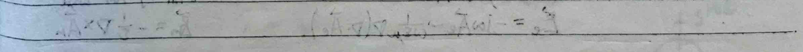


**1. Basic Parameters:**
- **Radiation Pattern:** Far field region has E and H components. $$\vec{S} = \frac{1}{2}(\vec{E} \times \vec{H}^*) = \frac{1}{2\eta}(\lvert E_{\theta} \rvert^2 + \lvert E_{\phi} \rvert^2)$$ $$E_{\theta} = \frac{f_{\theta}(\theta, \phi)}{r} e^{-jkr}, E_{\phi} = \frac{f_{\phi}(\theta, \phi)}{r} e^{-jkr}, \vec{H} = \frac{1}{r} \hat{\phi} \times \vec{E}$$ $$\therefore \vec{S} = \frac{1}{2\eta r^2} \left[ \lvert f_{\theta}(\theta, \phi) \rvert^2 + \lvert f_{\phi}(\theta, \phi) \rvert^2 \right]$$ $$F(\theta, \phi) \triangleq r^2 S = \frac{1}{2\eta} \left[ \lvert f_{\theta}(\theta, \phi) \rvert^2 + \lvert f_{\phi}(\theta, \phi) \rvert^2 \right]$$ $$F_{\mathrm{m}}(\theta, \phi) \triangleq \frac{F(\theta, \phi)}{F_{\mathrm{max}}(\theta, \phi)}$$
- **E Plane Pattern:** E field in plane F, e.g. φ = const for dish. - **H Plane Pattern:** H field in plane F, e.g. θ = 90° for dish.
**2. Directional Coefficient (Radiation Power Density):**
$$D(\theta, \phi) \triangleq \frac{S_r(\theta, \phi)}{P_r / 4\pi r^2}$$
**3. Antenna Gain (Input Power is the same):**
$$G(\theta, \phi) \triangleq \frac{S_r(\theta, \phi)}{P_{\mathrm{in}} / 4\pi r^2}$$
**4. Polarization:**
- Linear Polarization: Parallel Polarization (parallel to the plane), Vertical Polarization (perpendicular to the polarization direction). - Circular Polarization: Right-hand circular polarization (right-hand rule), Left-hand circular polarization (left-hand rule). - Elliptical Polarization: Elliptical polarization is not a circular polarization.
**5. Input Impedance:**
$$Z_{\mathrm{in}} = \text{standing wave ratio} / \text{incident current} \quad (\text{on the surface})$$
**6. Radiation Resistance:**
$$R_{\mathrm{rad}} = \frac{2P_r}{I^2}$$
**7. Bandwidth:**
The frequency range that meets the radiation resistance and gain requirements.

3. Point Source (Z = Z₀e^(jωt))
Near Field: S is complex, dipole field, no radiation. Far Field: S is real, radiating field, spherical wave.
$$H_{\phi} \approx \frac{2\ell}{4\pi} e^{-jk\ell} \frac{jk}{r} \sin\theta \approx E_{\theta}/\eta$$ $$E_{\theta} \approx \frac{2\ell}{4\pi} e^{-jk\ell} \frac{j\ell}{r} \sin\theta$$ $$S_{r} = \frac{1}{2}(E_{\theta} \times H_{\phi}^*) \cdot \hat{r} = \frac{\eta}{8} \left(\frac{2\ell}{\lambda}\right)^2 \frac{\sin^2\theta}{r^2}$$ $$P_{r} = \phi_s S_r ds = 40\pi^2 \left(\frac{2\ell}{\lambda}\right)^2$$ $$R_{r} = 2P_{r}/\lambda^2 = 80\pi^2 \left(\frac{\ell}{\lambda}\right)^2$$ $$f_{\theta}(\theta) = \sin\theta, \quad F_{\theta}(\theta) = \sin^2\theta$$ $$f_{\phi}(\theta) = \frac{1}{\sqrt{2}} \Rightarrow |\theta_2 - \theta_1| = 90^\circ \quad \text{half-power angle}$$ $$D(\theta, \phi) = \frac{S_r}{P_r/4\pi r^2} = \frac{3}{2} \sin^2\theta \quad \theta = \frac{\pi}{2} \quad 1.5 = 1.76 dB$$
4. Wire Antenna
Near Field: α = j \frac{Id^3}{4\pi} e^{-jkr} \frac{jk}{r} \sin\theta \approx dE_{\theta}/\eta dE_{\theta} = \frac{Id^3}{4\pi} e^{-jkr} \frac{jk}{r} \sin\theta
1. Symmetric Case: $$\left\{ \begin{array}{ll} I(x) = Z_0 \sin k(\frac{L}{2} - z) & 0 \leq z' \leq \frac{L}{2} \\ I(x') = Z_0 \sin k(\frac{L}{2} + z) & -\frac{L}{2} \leq z' \leq 0 \end{array} \right. \quad \text{Near Field:} \quad R \approx r$$ $$H_{\phi} = j \frac{Z_0 e^{-jk\ell}}{2\pi r} \cdot \frac{\cos(\frac{k\ell}{2} \cos\theta) - \cos\frac{k\ell}{2}}{\sin\theta} = E_{\theta}/\eta$$ $$E_{\theta} = j\eta \frac{Z_0 e^{-jk\ell}}{2\pi r} \cdot \frac{\cos(\frac{k\ell}{2} \cos\theta) - \cos\frac{k\ell}{2}}{\sin\theta}$$ $$S_r \propto \eta \frac{Z_0^2}{8\pi^2 r^2} \left[\frac{\cos(\frac{k\ell}{2} \cos\theta) - \cos\frac{k\ell}{2}}{\sin\theta}\right]^2$$ $$\ell = \frac{\lambda}{2} \quad P_r = 36.54 Z_0^2$$ $$\Downarrow \quad R_r = 73 \Omega = Z_{in}$$ $$f_{\theta}(\theta) = \frac{\cos(\frac{\pi}{2} \cos\theta)}{\sin\theta}, \quad F_{\theta}(\theta) = \frac{f_{\theta}(\theta)}{(1 - \cos\frac{\pi}{2} \cos\theta)^2}$$ $$f_{\phi}(\theta) = \frac{1}{\sqrt{2}} \Rightarrow |\theta_2 - \theta_1| = 78^\circ \quad \text{half-power angle}$$ $$D(\theta, \phi) \approx 1.64 = 2.15 dB$$ $$\ell = \lambda \quad R_r = 200 \Omega \quad \ell = \frac{3}{2} \lambda \quad R_r = 106 \Omega$$
2. Folded dipole Pr ≈ 2×73Ω Zin ≈ 4×73Ω
3. Monopole antenna D = 2D (folded dipole) l = λ/4时, D = 2×1.64 = 3.4 = 5.16dB
4. Inverted L/Inverted F antenna: Folded dipole + monopole antenna Inverted F antenna - ①②③④: Terminal open circuit
5. Dipole antenna - Yagi, dipole
1st element longer than λ/2: ZinB inductive 2nd element equal to λ/2: In the middle of the dipole (far field) 3rd element shorter than λ/2: ZinC capacitive
5. Array antenna Far field: Electric conductor/magnetic conductor + image principle Jms = -n × E / Jes = n × H
1. Fine waveguide. (Ey = yEo) Jms = x. 2Eo Jms = x. Jm = x. 2Eo Jms = x. Jm = x. 2Eo
Hmo = -jwεabφeikr Hmo = -jwεabφeikr Hmo = -jwεabφeikr
Hmo = -jwεabφeikr Hmo = -jwεabφeikr Hmo = -jwεabφeikr
Hmo = -jwεabφeikr Hmo = -jwεabφeikr Hmo = -jwεabφeikr
Hmo = -jwεabφeikr Hmo = -jwεabφeikr Hmo = -jwεabφeikr
Hmo = -jwεabφeikr Hmo = -jwεabφeikr Hmo = -jwεabφeikr
Hmo = -jwεabφeikr Hmo = -jwεabφeikr Hmo = -jwεabφeikr
Hmo = -jwεabφeikr Hmo = -jwεabφeikr Hmo = -jwεabφeikr
Hmo = -jwεabφeikr Hmo = -jwεabφeikr Hmo = -jwεabφeikr
Hmo = -jwεabφeikr Hmo = -jwεabφeikr Hmo = -jwεabφeikr
Hmo = -jwεabφeikr Hmo = -jwεabφeikr Hmo = -jwεabφeikr
Hmo = -jwεabφeikr Hmo = -jwεabφeikr Hmo = -jwεabφeikr
Hmo = -jwεabφeikr Hmo = -jwεabφeikr Hmo = -jwεabφeikr
Hmo = -jwεabφeikr Hmo = -jwεabφeikr Hmo = -jwεabφeikr
Hmo = -jwεabφeikr Hmo = -jwεabφeikr Hmo = -jwεabφeikr
Hmo = -jwεabφeikr Hmo = -jwεabφeikr Hmo = -jwεabφeikr
Hmo = -jwεabφeikr Hmo = -jwεabφeikr Hmo = -jwεabφeikr
Hmo = -jwεabφeikr Hmo = -jwεabφeikr Hmo = -jwεabφeikr
Hmo = -jwεabφeikr Hmo = -jwεabφeikr Hmo = -jwεabφeikr
Hmo = -jwεabφeikr Hmo = -jwεabφeikr Hmo = -jwεabφeikr
Hmo = -jwεabφeikr Hmo = -jwεabφeikr Hmo = -jwεabφeikr
Hmo = -jwεabφeikr Hmo = -jwεabφeikr Hmo = -jwεabφeikr
Hmo = -jwεabφeikr Hmo = -jwεabφeikr Hmo = -jwεabφeikr
Hmo = -jwεabφeikr Hmo = -jwεabφeikr Hmo = -jwεabφeikr
Hmo = -jwεabφeikr Hmo = -jwεabφeikr Hmo = -jwεabφeikr
Hmo = -jwεabφeikr Hmo = -jwεabφeikr Hmo = -jwεabφeikr
Hmo = -jwεabφeikr Hmo = -jwεabφeikr Hmo = -jwεabφeikr
Hmo = -jwεabφeikr Hmo = -jwεabφeikr Hmo = -jwεabφeikr
Hmo = -jwεabφeikr Hmo = -jwεabφeikr Hmo = -jwεabφeikr
Hmo = -jwεabφeikr Hmo = -jwεabφeikr Hmo = -jwεabφeikr
Hmo = -jwεabφeikr Hmo = -jwεabφeikr Hmo = -jwεabφeikr
Hmo = -jwεabφeikr Hmo = -jwεabφeikr Hmo = -jwεabφeikr
Hmo = -jwεabφeikr Hmo = -jwεabφeikr Hmo =
Φ = 90°: fn,E = Sa(kb/2sinφ) = 1/2, 2θ0.5,E = 51°·λ/5. Φ = 0°: fn,H = Sa(ka/2cosφ) = 1/2, 2θ0.5,H = 51°·x/a.
② Rectangular horn (Ey = yE0sin(π/ax))
2θ0.5,E = 68°·λ/6 2θ0.5,H = 68°·λ/a.
③ Parabolic dish.
Surface method: Similar to rectangular horn, find the surface on EH→F0, F1. Parabolic method: Use the parabolic surface of the dish. Short distance: Reflective surface Medium distance: Double polarization Long distance: √
F1 F F
6. Array
① Array.
1) Binary: E0 = jknl2l(2πr) sinφ·2cos(π/2) = jknl2l(2πr)fe(0,φ) - fa(0,φ).
2) N-element: fn = sin(Nπ/2) / Ncos(π/2) N must be an integer, φ = kdcosφ + β. θmax = cos^(-1)(β/ka), φ = 0 θ0 = cos^(-1)(2πr/Nka), φ = 2πr/N, p = ±1, ±2... θmax = cos^(-1)(2πr/2Nka), φ = 2πr/2N, p = (1, -2), (2, -3), (3, -1)...
Visible: θ ∈ (0, 180°), φ ∈ (β - kα, β + kα), θ/2 ∈ (β - kα/2, β + kα/2)
fE,a = Sa(kb/2sinφ)·2cos(π/2sinφ) fH,a = Sa(ka/2cosφ)·2cos(π/2cosφ)

$$Z_{in} = \frac{R_{r}}{2}$$
$$R_{r} \approx \left\{ \begin{array}{ll} 120\frac{\lambda}{W} & W \geq 2\lambda \\ P_{0}\left(\frac{\lambda}{W}\right)^2 & W < 0.35\lambda \\ \left[\frac{W}{120\lambda} - \frac{1}{60\pi}\right]^{-1} & 0.25\lambda \leq W < 2\lambda \end{array} \right.$$
4) Waveguide slot antenna: cutting the same direction current. Right figure:
2) Face array: $f_{a} = f_{ax} \cdot f_{ay}$
3) Body array: $f_{a} = f_{ax} \cdot f_{ay} \cdot f_{az}$
复习提纲 (Review Outline)
一. Transmission Line
1. Transmission line theory formulas: $$\Gamma = \frac{Z_{s} - Z_{c}}{Z_{s} + Z_{c}}$$ $$Z_{c} = \frac{1 + \Gamma}{1 - \Gamma} \quad (\Gamma = \frac{1}{2})$$ $$Z_{c} = \frac{1}{\Gamma}$$ $$\Gamma_{F} = \frac{2Z_{c} - 1}{2Z_{c} + 1}$$ $$\Gamma_{i} = \frac{1 - \Gamma}{1 + \Gamma} \quad (\Gamma = \frac{1}{2})$$ $$Y_{c}$$ $$k = \frac{1}{\rho}$$ $$\bar{y} = \frac{1}{\bar{z}}$$
2. Smith chart construction, chart rules. Mark the meaning of each line on the chart, and solve the problem. $$\Gamma = \Gamma_{F} \cdot e^{j(\phi_{F} - 2k\pi)}$$ $$\Gamma_{F}$$ $$\Gamma = -1$$ $$\Gamma = 1$$ $$\Gamma = \infty$$ $$\Gamma = 0$$ $$\Gamma = 1$$ $$\Gamma = -1$$ $$\Gamma = 0$$ $$\Gamma = \infty$$ $$\Gamma = 1$$ $$\Gamma = -1$$ $$\Gamma = 0$$ $$\Gamma = \infty$$ $$\Gamma = 1$$ $$\Gamma = -1$$ $$\Gamma = 0$$ $$\Gamma = \infty$$ $$\Gamma = 1$$ $$\Gamma = -1$$ $$\Gamma = 0$$ $$\Gamma = \infty$$ $$\Gamma = 1$$ $$\Gamma = -1$$ $$\Gamma = 0$$ $$\Gamma = \infty$$ $$\Gamma = 1$$ $$\Gamma = -1$$ $$\Gamma = 0$$ $$\Gamma = \infty$$ $$\Gamma = 1$$ $$\Gamma = -1$$ $$\Gamma = 0$$ $$\Gamma = \infty$$ $$\Gamma = 1$$ $$\Gamma = -1$$ $$\Gamma = 0$$ $$\Gamma = \infty$$ $$\Gamma = 1$$ $$\Gamma = -1$$ $$\Gamma = 0$$ $$\Gamma = \infty$$ $$\Gamma = 1$$ $$\Gamma = -1$$ $$\Gamma = 0$$ $$\Gamma = \infty$$ $$\Gamma = 1$$ $$\Gamma = -1$$ $$\Gamma = 0$$ $$\Gamma = \infty$$ $$\Gamma = 1$$ $$\Gamma = -1$$ $$\Gamma = 0$$ $$\Gamma = \infty$$ $$\Gamma = 1$$ $$\Gamma = -1$$ $$\Gamma = 0$$ $$\Gamma = \infty$$ $$\Gamma = 1$$ $$\Gamma = -1$$ $$\Gamma = 0$$ $$\Gamma = \infty$$ $$\Gamma = 1$$ $$\Gamma = -1$$ $$\Gamma = 0$$ $$\Gamma = \infty$$ $$\Gamma = 1$$ $$\Gamma = -1$$ $$\Gamma = 0$$ $$\Gamma = \infty$$ $$\Gamma = 1$$ $$\Gamma = -1$$ $$\Gamma = 0$$ $$\Gamma = \infty$$ $$\Gamma = 1$$ $$\Gamma = -1$$ $$\Gamma = 0$$ $$\Gamma = \infty$$ $$\Gamma = 1$$ $$\Gamma = -1$$ $$\Gamma = 0$$ $$\Gamma = \infty$$ $$\Gamma = 1$$ $$\Gamma = -1$$ $$\Gamma = 0$$ $$\Gamma = \infty$$ $$\Gamma = 1$$ $$\Gamma = -1$$ $$\Gamma = 0$$ $$\Gamma = \infty$$ $$\Gamma = 1$$ $$\Gamma = -1$$ $$\Gamma = 0$$ $$\Gamma = \infty$$ $$\Gamma = 1$$ $$\Gamma = -1$$ $$\Gamma = 0$$ $$\Gamma = \infty$$ $$\Gamma = 1$$ $$\Gamma = -1$$ $$\Gamma = 0$$ $$\Gamma = \infty$$ $$\Gamma = 1$$ $$\Gamma = -1$$ $$\Gamma = 0$$ $$\Gamma = \infty$$ $$\Gamma = 1$$ $$\Gamma = -1$$ $$\Gamma = 0$$ $$\Gamma = \infty$$ $$\Gamma = 1$$ $$\Gamma = -1$$ $$\Gamma = 0$$ $$\Gamma = \infty$$ $$\Gamma = 1$$ $$\Gamma = -1$$ $$\Gamma = 0$$ $$\Gamma = \infty$$ $$\Gamma = 1$$ $$\Gamma = -1$$ $$\Gamma = 0$$ $$\Gamma = \infty$$ $$\Gamma = 1$$ $$\Gamma = -1$$ $$\Gamma = 0$$ $$\Gamma = \infty$$ $$\Gamma = 1$$ $$\Gamma = -1
1. Find the area P49 Example 2.9. (Double-wire transformer area)
2. Single-wire transformer P46 Example 2.6. (Wire voltage distribution)
$$ P_{76.2.11} $$
$$ P_{75.2.5} $$

3. Example Problem P48. Example 2.8 (Delta Impedance).
$$ Z_{c} = \frac{1 + \Gamma_{F}}{1 - \Gamma_{F}} = \frac{1 + \Gamma_{F} e^{-j2k_{a}z}}{1 - \Gamma_{F} e^{j2k_{a}z}} $$
$$ = \frac{1 + \Gamma_{F} e^{-j\pi}}{1 - \Gamma_{F} e^{-j\pi}} = \frac{1 - \Gamma_{F}}{1 + \Gamma_{F}} = \frac{1}{2\Gamma_{F}} $$
P76. 2.10.
$$ Z_{F} = \frac{20 - j30}{30} = 0.67 - j1 $$, rotating 0.2λ, get 0.36 + j0.31
$$ Z_{F} = \frac{20 - j30}{30} = 0.67 - j1 $$, rotating 0.2λ, get 0.36 + j0.31
$$ Z_{F} = \frac{20 - j30}{30} = 0.67 - j1 $$, rotating 0.2λ, get 0.36 + j0.31
4. Draw the voltage amplitude distribution. P46. Example 2.6. Before.
$$ \Gamma_{F} = \frac{4 - 1}{4 + 1} = \frac{3}{5} = \frac{V_{0}}{V_{0} + 1} $$
$$ \Gamma_{F} = \frac{4 - 1}{4 + 1} = \frac{3}{5} = \frac{V_{0}}{V_{0} + 1} $$
$$ \Gamma_{F} = \frac{4 - 1}{4 + 1} = \frac{3}{5} = \frac{V_{0}}{V_{0} + 1} $$
$$ \Gamma_{F} = \frac{4 - 1}{4 + 1} = \frac{3}{5} = \frac{V_{0}}{V_{0} + 1} $$
$$ \Gamma_{F} = \frac{4 - 1}{4 + 1} = \frac{3}{5} = \frac{V_{0}}{V_{0} + 1} $$
$$ \Gamma_{F} = \frac{4 - 1}{4 + 1} = \frac{3}{5} = \frac{V_{0}}{V_{0} + 1} $$
$$ \Gamma_{F} = \frac{4 - 1}{4 + 1} = \frac{3}{5} = \frac{V_{0}}{V_{0} + 1} $$
$$ \Gamma_{F} = \frac{4 - 1}{4 + 1} = \frac{3}{5} = \frac{V_{0}}{V_{0} + 1} $$
$$ \Gamma_{F} = \frac{4 - 1}{4 + 1} = \frac{3}{5} = \frac{V_{0}}{V_{0} + 1} $$
$$ \Gamma_{F} = \frac{4 - 1}{4 + 1} = \frac{3}{5} = \frac{V_{0}}{V_{0} + 1} $$
$$ \Gamma_{F} = \frac{4 - 1}{4 + 1} = \frac{3}{5} = \frac{V_{0}}{V_{0} + 1} $$
$$ \Gamma_{F} = \frac{4 - 1}{4 + 1} = \frac{3}{5} = \frac{V_{0}}{V_{0} + 1} $$
$$ \Gamma_{F} = \frac{4 - 1}{4 + 1} = \frac{3}{5} = \frac{V_{0}}{V_{0} + 1} $$
$$ \Gamma_{F} = \frac{4 - 1}{4 + 1} = \frac{3}{5} = \frac{V_{0}}{V_{0} + 1} $$
$$ \Gamma_{F} = \frac{4 - 1}{4 + 1} = \frac{3}{5} = \frac{V_{0}}{V_{0} + 1} $$
$$ \Gamma_{F} = \frac{4 - 1}{4 + 1} = \frac{3}{5} = \frac{V_{0}}{V_{0} + 1} $$
$$ \Gamma_{F} = \frac{4 - 1}{4 + 1} = \frac{3}{5} = \frac{V_{0}}{V_{0} + 1} $$
$$ \Gamma_{F} = \frac{4 - 1}{4 + 1} = \frac{3}{5} = \frac{V_{0}}{V_{0} + 1} $$
$$ \Gamma_{F} = \frac{4 - 1}{4 + 1} = \frac{3}{5} = \frac{V_{0}}{V_{0} + 1} $$
$$ \Gamma_{F} = \frac{4 - 1}{4 + 1} = \frac{3}{5} = \frac{V_{0}}{V_{0} + 1} $$
$$ \Gamma_{F} = \frac{4 - 1}{4 + 1} = \frac{3}{5} = \frac{V_{0}}{V_{0} + 1} $$
$$ \Gamma_{F} = \frac{4 - 1}{4 + 1} = \frac{3}{5} = \frac{V_{0}}{V_{0} + 1} $$
$$ \Gamma_{F} = \frac{4 - 1}{4 + 1} = \frac{3}{5} = \frac{V_{0}}{V_{0} + 1} $$
$$ \Gamma_{F} = \frac{4 - 1}{4 + 1} = \frac{3}{5} = \frac{V_{0}}{V_{0} + 1} $$
$$ \Gamma_{F} = \frac{4 - 1}{4 + 1} = \frac{3}{5} = \frac{V_{0}}{V_{0} +
(b) $$\Gamma_F = \frac{2-1}{2+1} = \frac{1}{3}$$ $$|V| = |V_0 + |1 + \frac{1}{3} e^{-j\frac{2\pi}{3}}|$$ $$Z_{\text{in}}' = \frac{1-\Gamma_F}{1+\Gamma_F} = \frac{1-\Gamma_F e^{-j\frac{2\pi}{3}}}{1+\Gamma_F e^{-j\frac{2\pi}{3}}} = \frac{1-\Gamma_F}{1+\Gamma_F} = 2Z_c$$ $$\therefore Z_{\text{in}} = 2Z_c // 2Z_c = Z_c \therefore \Gamma_{\text{in}} = 0$$
(c) $$\Gamma_F = \frac{1}{3}, \Gamma_{F\text{in}} = \frac{1}{3}$$ $$Z_{\text{in}} = 2Z_c // \frac{1}{2}Z_c = \frac{2}{3}Z_c$$ $$\therefore \Gamma_{\text{in}} = \frac{\frac{2}{3} - 1}{\frac{2}{3} + 1} = -\frac{1}{7}$$ $$\therefore |V| = |V_0 + |1 - \frac{3}{7} e^{-j\frac{2\pi}{3}}|$$
5. Incident voltage, reflected voltage, total voltage, reflection coefficient concept. $$V = V_+ + V_-$$ $$\Gamma = \frac{V_-}{V_+}$$
P77. 2.15 $$\overline{Z}_{FA} = 0.5, \overline{Z}_{FB} = 2, \therefore \overline{Z}_{\text{in}} = 2//2 = 1$$ $$\therefore \overline{Z}_{FA} = 1, \overline{Z}_{FB} = 5\Omega$$ $$\therefore \Gamma_C = 0, V_B = V_g' e^{-j\frac{2\pi}{3}} = -jV_g', P_{FB} = \frac{V_g'^2}{2R_{FB}}$$ $$\& \overline{Z}_{FA} = 2, \therefore \Gamma_B = \frac{2-1}{2+1} = \frac{1}{3}$$ $$\therefore V_- = \frac{3}{4}V_B, V_+ = \frac{1}{4}V_B$$ $$\therefore V_A = V_- e^{-j\frac{2\pi}{3}} + V_+ e^{j\frac{2\pi}{3}} = (-j\frac{3}{4} + j\frac{1}{4})V_B$$ $$= -\frac{1}{2}V_B = -\frac{1}{2}V_g', \therefore P_{FA} = \frac{V_g'^2}{8R_{FA}}$$
反射系数的方向性！瞬时性！
The note discusses waveguides and the solution methods for cylindrical, rectangular, and circular waveguides. It covers TE and TM modes. The formulas for the electric and magnetic fields in these modes are derived using partial differential equations and boundary conditions. The note also includes the expressions for the electric and magnetic fields in cylindrical coordinates. The formulas are complex and involve trigonometric functions, complex numbers, and Bessel functions. The note is written in Chinese and the formulas are in mathematical notation.
The notebook page contains a series of mathematical derivations and equations related to electromagnetic field theory, specifically focusing on cylindrical waveguides and their modes. Here's a breakdown of the content:
---
**Circular TM Mode:**
$$\left\{\begin{array}{l} \frac{1}{r} \frac{\partial}{\partial r} \left( r \frac{\partial E_{z}}{\partial r} \right) + \frac{1}{r^{2}} \frac{\partial^{2} E_{z}}{\partial \phi^{2}} + k_{c}^{2} E_{z} = 0 \\ E_{z} \mid_{r = R} = 0 \end{array}\right.$$
$$E_{z}(\rho, \phi) = E_{m} J_{n}(k_{c} \rho) \cos(n \phi)$$
$$E_{r}(r, \phi) = -\frac{j k_{c} n}{k_{c} r} E_{m} J_{n}(k_{c} r) \cos(n \phi)$$
$$E_{\phi}(r, \phi) = \frac{j k_{c} n}{k_{c} r} E_{m} J_{n}(k_{c} r) \sin(n \phi)$$
$$H_{r}(r, \phi) = -\frac{1}{\eta_{TM}} E_{\phi}(r, \phi)$$
$$H_{\phi}(r, \phi) = \frac{1}{\eta_{TM}} E_{r}(r, \phi)$$
**Coaxial TEM Mode:**
$$\nabla_{T} \cdot \vec{E}(x, y) = 0 \Rightarrow \nabla_{T} \cdot \vec{H} = -\frac{1}{r} \frac{\partial}{\partial r} \left( r \frac{\partial \psi}{\partial r} \right) + \frac{1}{r^{2}} \frac{\partial^{2} \psi}{\partial \phi^{2}} = 0$$
$$\psi = \frac{V}{\ln(a/b)} \ln r$$
$$\therefore \vec{E}_{T}(x, y) = -\frac{\partial \psi}{\partial r} \hat{r} = -\frac{V}{r \ln(a/b)} \hat{r}$$
$$\vec{H}_{T}(x, y) = \frac{1}{\eta_{TEM}} \hat{z} \times \vec{E}_{T}(x, y)$$
$$\eta_{TEM} = \frac{\omega \mu}{k} = \sqrt{\frac{\mu}{\epsilon}}$$
**Coaxial TE Mode:**
$$\left\{\begin{array}{l} \frac{1}{r} \frac{\partial}{\partial r} \left( r \frac{\partial H_{z}}{\partial r} \right) + \frac{1}{r^{2}} \frac{\partial^{2} H_{z}}{\partial \phi^{2}} + k_{c}^{2} H_{z} = 0 \\ \frac{\partial H_{z}}{\partial r} \mid_{r = a} = \frac{\partial H_{z}}{\partial r} \mid_{r = b} = 0 \end{array}\right.$$
**Coaxial TM Mode:**
$$\left\{\begin{array}{l} \frac{1}{r} \frac{\partial}{\partial r} \left( r \frac{\partial E_{z}}{\partial r} \right) + \frac{1}{r^{2}} \frac{\partial^{2} E_{z}}{\partial \phi^{2}} + k_{c}^{2} E_{z} = 0 \\ E_{z} \mid_{r = a} = E_{z} \mid_{r = b} = 0 \end{array}\right.$$
---
**Question 2:**
2. Among the three transmission lines and coaxial lines, which mode (fundamental mode) is transmitted? How does the electromagnetic field distribution change? How can we ensure single mode transmission?
Solution: TE0. Since λc = 2√((m²/a²) + (n²/b²)), m = 1, n = 0 ~ m = 2, n = 0. The single mode TE0 works when a < λc < 2a, λc/2 < a < λc. The operating frequency range is 1.05a ≤ λc ≤ 0.8 × 2a.
No.
Date
1. TE11 $$\lambda_c = \frac{2\pi a}{V_{ni}}$$ $$\lambda_c = \frac{2\pi a}{V_{ni}}$$ $$n=1, i=1 \rightarrow TE_{11}$$ $$n=0, i=1 \rightarrow TM_{10}$$ $$\lambda_c < 2.61a < \lambda_c < 3.41a$$ $$\frac{\lambda_c}{3.41} < a < \frac{\lambda_c}{2.61}$$ $$a \approx \frac{2}{3}$$
2. TE01 $$\lambda_c = \frac{2\pi a}{V_{ni}}$$ $$n=1, i=1 \rightarrow TE_{11}$$ $$n=0, i=1 \rightarrow TM_{10}$$ $$\lambda_c < 2.61a < \lambda_c < 3.41a$$ $$\frac{\lambda_c}{3.41} < a < \frac{\lambda_c}{2.61}$$ $$a \approx \frac{2}{3}$$
3. TE01 $$\lambda_c = \frac{2\pi a}{V_{ni}}$$ $$n=1, i=1 \rightarrow TE_{11}$$ $$n=0, i=1 \rightarrow TM_{10}$$ $$\lambda_c < 2.61a < \lambda_c < 3.41a$$ $$\frac{\lambda_c}{3.41} < a < \frac{\lambda_c}{2.61}$$ $$a \approx \frac{2}{3}$$
4. TE01 $$\lambda_c = \frac{2\pi a}{V_{ni}}$$ $$n=1, i=1 \rightarrow TE_{11}$$ $$n=0, i=1 \rightarrow TM_{10}$$ $$\lambda_c < 2.61a < \lambda_c < 3.41a$$ $$\frac{\lambda_c}{3.41} < a < \frac{\lambda_c}{2.61}$$ $$a \approx \frac{2}{3}$$
5. TE01 $$\lambda_c = \frac{2\pi a}{V_{ni}}$$ $$n=1, i=1 \rightarrow TE_{11}$$ $$n=0, i=1 \rightarrow TM_{10}$$ $$\lambda_c < 2.61a < \lambda_c < 3.41a$$ $$\frac{\lambda_c}{3.41} < a < \frac{\lambda_c}{2.61}$$ $$a \approx \frac{2}{3}$$
6. TE01 $$\lambda_c = \frac{2\pi a}{V_{ni}}$$ $$n=1, i=1 \rightarrow TE_{11}$$ $$n=0, i=1 \rightarrow TM_{10}$$ $$\lambda_c < 2.61a < \lambda_c < 3.41a$$ $$\frac{\lambda_c}{3.41} < a < \frac{\lambda_c}{2.61}$$ $$a \approx \frac{2}{3}$$
7. TE01 $$\lambda_c = \frac{2\pi a}{V_{ni}}$$ $$n=1, i=1 \rightarrow TE_{11}$$ $$n=0, i=1 \rightarrow TM_{10}$$ $$\lambda_c < 2.61a < \lambda_c < 3.41a$$ $$\frac{\lambda_c}{3.41} < a < \frac{\lambda_c}{2.61}$$ $$a \approx \frac{2}{3}$$
8. TE01 $$\lambda_c = \frac{2\pi a}{V_{ni}}$$ $$n=1, i=1 \rightarrow TE_{11}$$ $$n=0, i=1 \rightarrow TM_{10}$$ $$\lambda_c < 2.61a < \lambda_c < 3.41a$$ $$\frac{\lambda_c}{3.41} < a < \frac{\lambda_c}{2.61}$$ $$a \approx \frac{2}{3}$$
9. TE01 $$\lambda_c = \frac{2\pi a}{V_{ni}}$$ $$n=1, i=1 \rightarrow TE_{11}$$ $$n=0, i=1 \rightarrow TM_{10}$$ $$\lambda_c < 2.61a < \lambda_c < 3.41a$$ $$\frac{\lambda_c}{3.41} < a < \frac{\lambda_c}{2.61}$$ $$a \approx \frac{2}{3}$$
10. TE01 $$\lambda_c = \frac{2\pi a}{V_{ni}}$$ $$n=1, i=1 \rightarrow TE_{11}$$ $$n=0, i=1 \rightarrow TM_{10}$$ $$\lambda_c < 2.61a < \lambda_c < 2.41a$$ $$\frac{\lambda_c}{2.41} < a < \frac{\lambda_c}{2.61}$$ $$a \approx \frac{2}{3}$$
11. TE01 $$\lambda_c = \frac{2\pi a}{V_{ni}}$$ $$n=1, i=1 \rightarrow TE_{11}$$ $$n=0, i=1 \rightarrow TM_{10}$$ $$\lambda_c < 2.61a < \lambda_c < 2.41a$$ $$\frac{\lambda_c}{2.41} < a < \frac{\lambda_c}{2.61}$$ $$a \approx \frac{2}{3}$$
12. TE01 $$\lambda_c = \frac{2\pi a}{V_{ni}}$$ $$n=1, i=1 \rightarrow TE_{11}$$
ST: E field forms a rectangular pattern TM: H field forms a circular pattern
4. Rectangular and circular patterns of field components
Rectangular: TEmn: (field components in y direction) TMmn: (field components in x direction)
Circular: TEmi: (field components in the circular direction) TMmi: (field components in the circular direction)
m: number of half periods of the field components in the y direction n: number of full periods of the field components in the y direction
n: number of periods of the field components in the circular direction n: number of periods of the field components in the circular direction
$$n: \text{field components in the circular direction}$$ $$n: \text{field components in the circular direction}$$
5. Impedance Matching Methods and Rules.
Matching Methods: Electric Field Matching, Magnetic Field Matching, Electromagnetic Matching
Matching Rules: ∫(E·Je + H·Jm) dV ≠ 0 (Matching) ∫=0 (No Matching)
III. Microwave Network.
1. S-parameters: Definition, Properties, Physical Meaning?
Definition: S_{ij} = b_{ij} / a_{ij} | a_{ik} ≠ 0; according to this, S_{ii} = Γ
[b_1] = [S_{11} ... S_{1n}] [a_1] [b_n] = [S_{n1} ... S_{nn}] [a_n]
a = I + √2c = V+/√2c b = -I - √2c = V-/√2c
Properties: N-ports: Symmetry: S_{ij} = S_{ji}, [S] = [S]^T Normalization: [S]^H[S] = I, thus symmetric [S]^*·[S] = I
2. Endports: Symmetry: S_{12} = S_{21} (unknown) Normalization: |S_{11}| = |S_{22}|, |S_{11}| = |S_{22}|, |S_{11}|^2 + |S_{22}|^2 = 1, |S_{12}|^2 + |S_{22}|^2 = 1 (unknown)
Physical Meaning: S_{ii}: input matches source, output matches load, i-th port reflection coefficient.

2. Reference plane S transformation
$$ \begin{aligned} & a_1' \rightarrow \frac{a_1}{a_1} \leftarrow a_1 \\ & b_1' \leftarrow b_1 \rightarrow b_1 \\ & S_{11}' = \frac{b_1 e^{-j\theta_1}}{a_1 e^{j\theta_1}} \mid a_1 = 0 = S_{11} e^{-j2\theta_1} \\ & S_{22}' = \frac{b_2 e^{-j\theta_2}}{a_2 e^{j\theta_2}} \mid a_2 = 0 = S_{11} e^{-j2\theta_2} \\ & S_{21}' = \frac{b_2 e^{-j\theta_2}}{a_1 e^{j\theta_1}} \mid a_2 = 0 = S_{21} e^{-j(\theta_1 + \theta_2)} \\ & S_{12}' = \frac{b_1 e^{-j\theta_1}}{a_2 e^{j\theta_2}} \mid a_1 = 0 = S_{12} e^{-j(\theta_1 + \theta_2)} \end{aligned} $$
$$ \therefore [S'] = \begin{bmatrix} S_{11} e^{-j2\theta_1} & S_{12} e^{-j(\theta_1 + \theta_2)} \\ S_{21} e^{-j(\theta_1 + \theta_2)} & S_{22} e^{-j2\theta_2} \end{bmatrix} = \begin{bmatrix} e^{-j\theta_1} & 0 \\ 0 & e^{-j\theta_2} \end{bmatrix} \begin{bmatrix} S_{11} & S_{12} \\ S_{21} & S_{22} \end{bmatrix} \begin{bmatrix} e^{-j\theta_1} & 0 \\ 0 & e^{-j\theta_2} \end{bmatrix} $$
$$ \text{Note: } [S'] = [P] [S] [P] \quad [P] = \text{diag}\{e^{-j\theta_i}\} \quad i = 1, \ldots, n. $$
3. Time-domain network [S] solution method. : Open circuit → S1; Short circuit → S2.
P187 Example 4.5. $$ S_{21} = S_{11} = \frac{S_1 + S_2}{2}, \quad S_{12} = S_{21} = \frac{S_1 - S_2}{2} $$
$$ \frac{(Z_c) Y}{(Z_c)} \Rightarrow \frac{(Z_c) Y}{\frac{1}{2} (Z_c)} $$
Short: $$ \frac{(Z_c)}{\frac{1}{2} (Z_c)} \quad S_2 = -1 $$
Open: $$ \frac{(Z_c)}{\frac{1}{2} Y} \quad S_1 = \frac{-Y/2 \cdot Z_c + 1}{+Y/2 \cdot Z_c + 1} = \frac{2Yc - Y}{2Yc + Y} $$
$$ \therefore S_{11} = S_{22} = \frac{S_1 + S_2}{2} = \frac{1}{2} \cdot \frac{-2Y}{2Yc + Y} = -\frac{Y}{2Yc + Y} $$
$$ S_{12} = S_{21} = \frac{S_1 - S_2}{2} = \frac{1}{2} \cdot \frac{4Yc}{2Yc + Y} = \frac{2Yc}{2Yc + Y} $$
$$ S_{11} = \frac{b_1}{a_1} \mid a_2 = 0 = \Gamma_1 = \frac{1 - Y_1}{1 + Y_1} = \frac{Y_c - (R + Y_c)}{Y_c + (R + Y_c)} = -\frac{Y}{R + 2Y_c} $$
$$ S_{21} = \frac{b_2}{a_1} \mid a_2 = 0 = \frac{a_1 + a_1 \Gamma_1}{a_1} = 1 + \Gamma_1 = \frac{2Y_c}{Y + 2Y_c} $$

Lesson Example:
$$\Gamma_{\phi 2} = -e^{-j\kappa_2 \cdot 2 \cdot \frac{\lambda}{8}} = -(-j) = j$$ $$\Gamma_{\phi 1} = e^{-j\kappa_2 \cdot 2 \cdot \frac{\lambda}{8}} = -j$$ $$\Gamma_{\phi 2} = \frac{1 + \Gamma_{\phi 1}}{1 - \Gamma_{\phi 1}} = \frac{1 + j}{1 - j}$$ $$\Gamma_{\phi 1} = \frac{1 - \Gamma_{\phi 2}}{1 + \Gamma_{\phi 2}} = \frac{1 - j}{1 + j}$$ $$Z_{\phi 2} = \frac{1}{Y_{C2}} - \frac{1 + j}{1 - j}$$ $$Z_{\phi 1} = \frac{1}{Y_{C1}} + \frac{1 + j}{1 + j}$$ $$\Gamma_{\phi} = \frac{Y_{C2} \frac{1 + j}{1 + j} + Y_{C1} \frac{1 + j}{1 - j}}{1}$$ $$\Gamma_{\phi} = \frac{Y_{C2} \frac{1 - j}{1 - j} + Y_{C1} \frac{1 + j}{1 - j}}{1}$$ $$\Gamma_{\phi} = \frac{Y_{C2} \frac{1 - j}{1 - j} + Y_{C1} \frac{1 + j}{1 - j}}{1}$$ $$\Gamma_{\phi} = \frac{Y_{C2} \frac{1 - j}{1 - j} + Y_{C1} \frac{1 + j}{1 - j}}{1}$$ $$\Gamma_{\phi} = \frac{Y_{C2} \frac{1 - j}{1 - j} + Y_{C1} \frac{1 + j}{1 - j}}{1}$$ $$\Gamma_{\phi} = \frac{Y_{C2} \frac{1 - j}{1 - j} + Y_{C1} \frac{1 + j}{1 - j}}{1}$$ $$\Gamma_{\phi} = \frac{Y_{C2} \frac{1 - j}{1 - j} + Y_{C1} \frac{1 + j}{1 - j}}{1}$$ $$\Gamma_{\phi} = \frac{Y_{C2} \frac{1 - j}{1 - j} + Y_{C1} \frac{1 + j}{1 - j}}{1}$$ $$\Gamma_{\phi} = \frac{Y_{C2} \frac{1 - j}{1 - j} + Y_{C1} \frac{1 + j}{1 - j}}{1}$$ $$\Gamma_{\phi} = \frac{Y_{C2} \frac{1 - j}{1 - j} + Y_{C1} \frac{1 + j}{1 - j}}{1}$$ $$\Gamma_{\phi} = \frac{Y_{C2} \frac{1 - j}{1 - j} + Y_{C1} \frac{1 + j}{1 - j}}{1}$$ $$\Gamma_{\phi} = \frac{Y_{C2} \frac{1 - j}{1 - j} + Y_{C1} \frac{1 + j}{1 - j}}{1}$$ $$\Gamma_{\phi} = \frac{Y_{C2} \frac{1 - j}{1 - j} + Y_{C1} \frac{1 + j}{1 - j}}{1}$$ $$\Gamma_{\phi} = \frac{Y_{C2} \frac{1 - j}{1 - j} + Y_{C1} \frac{1 + j}{1 - j}}{1}$$ $$\Gamma_{\phi} = \frac{Y_{C2} \frac{1 - j}{1 - j} + Y_{C1} \frac{1 + j}{1 - j}}{1}$$ $$\Gamma_{\phi} = \frac{Y_{C2} \frac{1 - j}{1 - j} + Y_{C1} \frac{1 + j}{1 - j}}{1}$$ $$\Gamma_{\phi} = \frac{Y_{C2} \frac{1 - j}{1 - j} + Y_{C1} \frac{1 + j}{1 - j}}{1}$$ $$\Gamma_{\phi} = \frac{Y_{C2} \frac{1 - j}{1 - j} + Y_{C1} \frac{1 + j}{1 - j}}{1}$$ $$\Gamma_{\phi} = \frac{Y_{C2} \frac{1 - j}{1 - j} + Y_{C1} \frac{1 + j}{1 - j}}{1}$$ $$\Gamma_{\phi} = \frac{Y_{C2} \frac{1 - j}{1 - j} + Y_{C1} \frac{1 + j}{1 - j}}{1}$$ $$\Gamma_{\phi} = \frac{Y_{C2} \frac{1 - j}{1 - j} + Y_{C1} \frac{1 + j}{1 - j}}{1}$$ $$\Gamma_{\phi} = \frac{Y_{C2} \frac{1 - j}{1 - j} + Y_{C1} \frac{1 + j}{1 - j}}{1}$$ $$\Gamma_{\phi} = \frac{Y_{C2} \frac{1 - j}{1 - j} + Y_{C1} \frac{1 + j}{1 - j}}{1}$$ $$\Gamma_{\phi} = \frac{Y_{C2} \frac{1 - j}{1 - j} + Y_{C1} \frac{1 + j}{1 - j}}{1}$$ $$\Gamma_{\phi} = \frac{Y_{C2} \frac{1 - j}{1 - j} + Y_{C1} \frac{1 + j}{1 - j}}{1}$$ $$\Gamma_{\phi} = \frac{Y_{C2} \frac{1 - j}{1 - j} + Y_{C1}

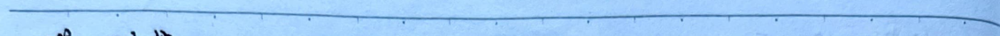

4. Interconnection Matrix [A], [a] [A] ~ [S] transformation.
Interconnection $$\frac{z_1}{v_1} \rightarrow [A] \frac{z_2}{\sqrt{v_2}}$$
$$\begin{bmatrix} v_1 \\ z_1 \end{bmatrix} = \begin{bmatrix} A & B \\ C & D \end{bmatrix} \begin{bmatrix} v_2 \\ z_2 \end{bmatrix} \quad [A] = \sum_{i=1}^{n} [A_i]$$
Normalization Interconnection (Shifted Matrix). $$\begin{bmatrix} z_1 \\ v_1 \end{bmatrix} \rightarrow \begin{bmatrix} \bar{a} \\ \bar{c} \end{bmatrix} \frac{z_2}{\sqrt{v_2}} (z_{c2}). \quad \left\{ \begin{array}{l} z = I \cdot \sqrt{2} \\ v = V / \sqrt{2} \end{array} \right.$$
$$\begin{bmatrix} \bar{a} & \bar{b} \\ \bar{c} & \bar{d} \end{bmatrix} = \begin{bmatrix} A \sqrt{\frac{2}{2c_1}} & B \sqrt{\frac{2}{2c_1c_2}} \\ C \sqrt{\frac{2}{2c_1c_2}} & D \sqrt{\frac{2}{2c_1c_2}} \end{bmatrix}$$
[A] ~ [S] transformation: $$s_{11} = \frac{\bar{a} + \bar{b} - \bar{c} - \bar{d}}{\bar{a} + \bar{b} + \bar{c} + \bar{d}} \quad \bar{a} = \frac{1}{2s_{11}} (1 + s_{11} - s_{22} - |s|)$$ $$s_{12} = \frac{2|\bar{a}|}{\bar{a} + \bar{b} + \bar{c} + \bar{d}} \quad \bar{b} = \frac{1}{2s_{11}} (1 + s_{11} + s_{22} + |s|)$$ $$s_{21} = \frac{\bar{a} + \bar{b} - \bar{c} + \bar{d}}{\bar{a} + \bar{b} + \bar{c} + \bar{d}} \quad \bar{c} = \frac{1}{2s_{11}} (1 - s_{11} - s_{22} + |s|)$$ $$s_{22} = \frac{\bar{a} + \bar{b} - \bar{c} + \bar{d}}{\bar{a} + \bar{b} + \bar{c} + \bar{d}} \quad \bar{d} = \frac{1}{2s_{11}} (1 - s_{11} + s_{22} - |s|)$$
Example, find [A] when input impedance is matched (S11 = 1 = 0). Use a and b for convenience. $$\frac{1}{(2c_1)} \frac{1}{(2c_2)} \frac{1}{(2c_3)}$$
First find [a2]: $$\bar{a} = \frac{V_1}{V_2} \Big|_{z_2 = 0} = \frac{V_2 \cos k_1 l}{V_2} = \cos k_1 l$$ $$\bar{b} = \frac{V_1}{V_2} \Big|_{z_2 = 0} = \frac{j2k_1 \sin k_1 l}{2V_2} = j \sin k_1 l$$ $$\because \text{symmetric} \quad \therefore \bar{a} = \bar{a}, \quad \bar{b} = \bar{c}$$
Find [a3]: $$\bar{a} = \frac{V_1}{V_2} \Big|_{z_2 = 0} = 1, \quad \bar{b} = \frac{V_1}{V_2} \Big|_{z_2 = 0} = 0, \quad \bar{c} = \frac{V_1}{V_2} \Big|_{z_2 = 0} = 0, \quad \bar{d} = \frac{1}{2} \Big|_{z_2 = 0} = 1$$ $$\therefore [a_3] = \begin{bmatrix} \sqrt{\frac{2}{2c_1}} & 0 \\ \sqrt{\frac{2}{2c_1c_2}} & 0 \end{bmatrix}$$
$$\therefore \left[ \bar{a} \right] = \left[ \bar{a}_1 \right] \cdot \left[ \bar{a}_2 \right] \cdot \left[ \bar{a}_3 \right]$$ $$= \left[ \begin{array}{cc} \left( \frac{z_{c_3}}{z_{c_1}} \right) \cos k\lambda & \frac{j}{\sqrt{z_{c_1} z_{c_3}}} \sin k\lambda \\ \frac{\sqrt{z_{c_3}}}{z_{c_1}} \sin k\lambda & \frac{\sqrt{z_{c_1}}}{z_{c_3}} \cos k\lambda \end{array} \right]$$
Solve for S11: $$S_{11} = \frac{\bar{a} + \bar{b} - \bar{c} - \bar{d}}{\bar{a} + \bar{b} + \bar{c} + \bar{d}} = \frac{1}{K} \left[ \left( \sqrt{\frac{z_{c_3}}{z_{c_1}}} - \sqrt{\frac{z_{c_1}}{z_{c_3}}} \right) \cos k\lambda + j \left( \frac{\sqrt{z_{c_2}}}{\sqrt{z_{c_1} z_{c_3}}} - \frac{\sqrt{z_{c_1} z_{c_3}}}{\sqrt{z_{c_2}}} \right) \sin k\lambda \right]$$ (K ≠ 0).
$$\left\{ \begin{array}{ll} z_{c_1} = z_{c_2} = z_{c_3} & S_{11} = 0 \quad \text{Uniform Line} \\ z_{c_1} = z_{c_3}, l = \frac{\lambda}{2} & S_{11} = 0 \quad \text{Quarter-wave Transformer} \\ z_{c_2} = \sqrt{z_{c_1} z_{c_3}}, l = \frac{\lambda}{4} & S_{11} = 0 \quad \text{Quarter-wave Transformer} \end{array} \right.$$
### Antenna 1. What does the term "antenna" mean in the context of the diagram, gain, radiation, half-power angle, and half-power angle of the antenna? $$F_n(\theta, \phi)$$ $$f_n(\theta, \phi)$$
2. What is the difference between the directivity coefficient D and the gain G? What is the relationship between them? Directivity coefficient: $$D_n(\theta, \phi) = \left| \frac{S_{\text{max}}(\theta, \phi)}{P_r / 4\pi r^2} \right|$$ Gain: $$G_n(\theta, \phi) = \left| \frac{S_{\text{max}}(\theta, \phi)}{P_r / 4\pi r^2} \right|$$
3. What does the term "antenna polarization" mean? What is the difference between linear polarization and circular polarization? Linear polarization: Parallel (parallel to the receiving surface), perpendicular (perpendicular to the receiving surface) Circular polarization: Right-hand (right-handed), left-hand (left-handed).
Circular polarization: Right-hand (right-handed), left-hand (left-handed).
Circular polarization: Right-hand (right-handed), left-hand (left-handed).
No. Data.
Polarization matching: Antenna polarization is consistent. Polarization mismatch: Polarization mismatch.
4. How to calculate the radiation pattern of a rectangular array? The radiation pattern of a rectangular array of antennas is the product of the radiation patterns of the individual antennas. $$ f_{a}(0,\varphi) = f_{a}(0,\varphi) \cdot f_{e}(0,\varphi) = f_{a}(0,\varphi) $$
5. What is the radiation pattern of a dipole antenna, a half-wave dipole antenna, and a full-wave dipole antenna in the E and H planes (1D - electric field)? - Dipole antenna: $$ f_{n}(0) = \sin\theta $$ - Half-wave dipole antenna: $$ f_{n}(0) = \frac{\cos\left(\frac{\pi}{2} \cos\theta\right)}{\sin\theta} $$ - Full-wave dipole antenna: $$ f_{n}(0) = \frac{\cos\left(\pi \cos\theta\right) + 1}{\sin\theta} $$
6. What is the structure, analysis method, and equivalent circuit of a microstrip antenna? Structure: - E-plane: $$ \varphi = 90^\circ \text{ (has a phase difference of } \frac{\lambda}{2} \text{)} $$ - H-plane: $$ \varphi = 0^\circ \text{ (no phase difference)} $$
Analysis method: - E-plane: $$ f_{a,E} = S_{a}\left(\frac{\lambda g}{2} \cos\theta\right) \cdot 2 \cos\left(\frac{\lambda g}{2} \cos\theta\right) $$ - H-plane: $$ f_{a,H} = S_{a}\left(\frac{\lambda g}{2} \cos\theta\right) \cdot 2 \cos\theta $$
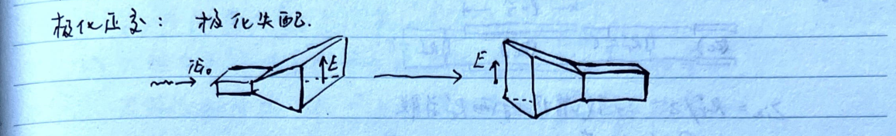

The note appears to be a detailed explanation of electrical circuit analysis, specifically focusing on impedance matching and the behavior of a three-element eight-rod antenna system. Here's a breakdown of the content:
---
**Impedance Matching:**
$$\frac{1}{Z_{in}} = \frac{1}{R_{1}} + \frac{1}{R_{2}}$$
When the antenna is resonant, the two resistors are in parallel.
**Adjusting R1: Changes the resistance.**
**Adjusting λ: Changes the wavelength.**
---
**7. Three-Element Eight-Rod Antenna Analysis Method:**
$$Z_{2} \rightarrow E_{B}, E_{C} \rightarrow E_{B}^{'} E_{C}^{'} \rightarrow e_{B}, e_{C} \rightarrow \frac{Z_{B}}{Z_{C}} \rightarrow I_{1}, I_{3}$$
---
**1) Near B and C (Near Field):**
$$E_{B,C} = j\frac{2e^{jkr}}{2\pi r} \cdot \frac{\cos(\frac{\pi}{2} \cos\theta)}{\sin\theta} = \frac{240}{\lambda} \cdot \frac{\cos(\frac{\pi}{2} \cos\theta)}{\sin\theta}$$
---
**2) Induced Electric Fields:**
$$E_{B}, E_{C} \parallel \text{Left and Right Rods}$$
The induced electric fields are equal and opposite.
$$e_{B} = \int_{1}^{2} E_{B} \cdot dt = -\int_{1}^{2} E_{B} \cdot dt$$ $$e_{C} = \int_{1}^{2} E_{C} \cdot dt = -\int_{1}^{2} E_{C} \cdot dt$$
---
**3) Left Resistor is longer than the other two.**
The input impedance is inductive (end-open circuit).
The right resistor is shorter than the other two. The input impedance is capacitive (end-open circuit).
---
**Z_{B,in}** and **Z_{C,in}** are the input impedances of the B and C elements, respectively.
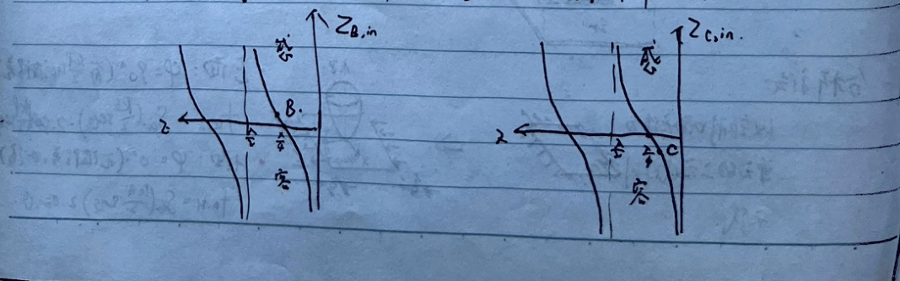
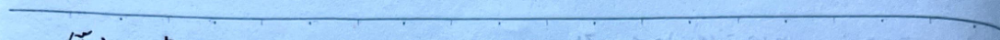
4) $$I_B = e_B / Z_{B,in}, I_C = e_C / Z_{C,in}, I_B \neq I_C 90^\circ, I_B \neq I_C 90^\circ$$
Near-field impedance matching: $$I_B \approx I_C \approx I_0$$
5) Left-hand and right-hand waves in the near field add in phase, in the far field add in phase.
8. Describe several types of parabolic surface antennas. What types of waves do they produce, and what are their uses? a) Circular parabolic surface antenna (circular wave) b) Slotted parabolic surface antenna (elliptical wave)
c) Slotted parabolic surface antenna (elliptical wave) d) Parabolic surface antenna (elliptical wave)
9. How do you calculate the far-field radiation pattern of a parabolic surface antenna? Method: Use the initial wave impedance and parabolic surface reflection characteristics to find the surface currents $$E_A, H_A$$ (only for the parabolic surface antenna). $$H_A E_A \rightarrow J_{in} J_{es}$$ $$\rightarrow A_m A \rightarrow E \cdot H$$ $$\rightarrow A_m A \rightarrow E \cdot H$$ $$\rightarrow A_m A \rightarrow E \cdot H$$ $$\rightarrow A_m A \rightarrow E \cdot H$$ $$\rightarrow A_m A \rightarrow E \cdot H$$ $$\rightarrow A_m A \rightarrow E \cdot H$$ $$\rightarrow A_m A \rightarrow E \cdot H$$ $$\rightarrow A_m A \rightarrow E \cdot H$$ $$\rightarrow A_m A \rightarrow E \cdot H$$ $$\rightarrow A_m A \rightarrow E \cdot H$$ $$\rightarrow A_m A \rightarrow E \cdot H$$ $$\rightarrow A_m A \rightarrow E \cdot H$$ $$\rightarrow A_m A \rightarrow E \cdot H$$ $$\rightarrow A_m A \rightarrow E \cdot H$$ $$\rightarrow A_m A \rightarrow E \cdot H$$ $$\rightarrow A_m A \rightarrow E \cdot H$$ $$\rightarrow A_m A \rightarrow E \cdot H$$ $$\rightarrow A_m A \rightarrow E \cdot H$$ $$\rightarrow A_m A \rightarrow E \cdot H$$ $$\rightarrow A_m A \rightarrow E \cdot H$$ $$\rightarrow A_m A \rightarrow E \cdot H$$ $$\rightarrow A_m A \rightarrow E \cdot H$$ $$\rightarrow A_m A \rightarrow E \cdot H$$ $$\rightarrow A_m A \rightarrow E \cdot H$$ $$\rightarrow A_m A \rightarrow E \cdot H$$ $$\rightarrow A_m A \rightarrow E \cdot H$$ $$\rightarrow A_m A \rightarrow E \cdot H$$ $$\rightarrow A_m A \rightarrow E \cdot H$$ $$\rightarrow A_m A \rightarrow E \cdot H$$ $$\rightarrow A_m A \rightarrow E \cdot H$$ $$\rightarrow A_m A \rightarrow E \cdot H$$ $$\rightarrow A_m A \rightarrow E \cdot H$$ $$\rightarrow A_m A \rightarrow E \cdot H$$ $$\rightarrow A_m A \rightarrow E \cdot H$$ $$\rightarrow A_m A \rightarrow E \cdot H$$ $$\rightarrow A_m A \rightarrow E \cdot H$$ $$\rightarrow A_m A \rightarrow E \cdot H$$ $$\rightarrow A_m A \rightarrow E \cdot H$$ $$\rightarrow A_m A \rightarrow E \cdot H$$ $$\rightarrow A_m A \rightarrow E \cdot H$$ $$\rightarrow A_m A \rightarrow E \cdot H$$ $$\rightarrow A_m A \rightarrow E \cdot H$$ $$\rightarrow A_m A \rightarrow E \cdot H$$ $$\rightarrow A_m A \rightarrow E \cdot H$$ $$\rightarrow A_m A \rightarrow E \cdot H$$ $$\rightarrow A_m A \rightarrow E \cdot H$$ $$\rightarrow A_m A \rightarrow E \cdot H$$ $$\rightarrow A_m A \rightarrow E \cdot H$$ $$\rightarrow A_m A \rightarrow E \cdot H$$ $$\rightarrow A_m A \rightarrow E \cdot H$$ $$\rightarrow A_m A \rightarrow E \cdot H$$ $$\rightarrow A_m A \rightarrow E \cdot H$$ $$\rightarrow A_m A \rightarrow E \cdot H$$ $$\rightarrow A_m A \rightarrow E \cdot H$$ $$\rightarrow A_m A \rightarrow E \cdot H$$ $$\rightarrow A_m A \rightarrow E \cdot H$$ $$\rightarrow A_m A \rightarrow E \cdot H$$ $$\rightarrow A_m A \rightarrow E \cdot H$$ $$\rightarrow A_m A \rightarrow E \cdot H$$ $$\rightarrow A_m A \rightarrow E \cdot H$$ $$\rightarrow A_m A \rightarrow E \cdot H$$ $$\rightarrow A_m A \rightarrow E \cdot H$$ $$\rightarrow A_m A \rightarrow E \cdot H$$ $$\rightarrow A_m A \rightarrow E \cdot H$$ $$\rightarrow A_m A \rightarrow E \cdot H$$ $$\rightarrow A_m A \rightarrow E \cdot H$$ $$\rightarrow A_m A \rightarrow E \cdot H$$ $$\rightarrow A_m A \rightarrow E \cdot H$$ $$\rightarrow A_m A \rightarrow E \cdot H$$ $$\rightarrow A_m A \rightarrow E \cdot H$$ $$\rightarrow A_m A \rightarrow E \cdot H$$ $$\rightarrow A_m A \rightarrow E \cdot H$$ $$\rightarrow A_m A \rightarrow E \cdot H$$ $$\rightarrow A_m A \rightarrow E \cdot H$$ $$\rightarrow A_m A \rightarrow E \cdot H$$ $$\rightarrow A_m A \rightarrow E \cdot H$$ $$\rightarrow A_m A \rightarrow E \cdot H$$ $$\rightarrow A_m A \rightarrow E \cdot H$$ $$\rightarrow A_m A \rightarrow E \cdot H$$ $$\rightarrow A_m A \rightarrow E \cdot H$$ $$\rightarrow A_m A \rightarrow E \cdot H$$ $$\rightarrow A_m A \rightarrow E \cdot H$$ $$\rightarrow A_m A \rightarrow E \cdot H$$ $$\rightarrow A_m A \rightarrow E \cdot H$$ $$\rightarrow A_m A \rightarrow E \cdot H$$ $$\rightarrow A_m A \rightarrow E \cdot H$$ $$\rightarrow A_m A \rightarrow E \cdot H$$ $$\rightarrow A_m A \rightarrow E \cdot H$$ $$\rightarrow A_m A \rightarrow E \cdot H$$ $$\rightarrow A_m A \rightarrow E \cdot H$$
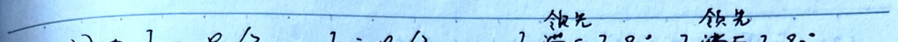


10. Cassie-Green Line's two analysis methods. Virtual Source Method (Equivalent Source Method)
17. Additional
2805 D0 Zin Rr l E: l<<λ l=λ λ<<λ λ=λ
Mode Classification: 1) Transverse Electric TE mode 2) Transverse Magnetic TM mode 3) Transverse Electric and Magnetic TEM mode 4) Mixed modes EH mode
Mode Transmission Conditions: 1) Electromagnetic excitation mode: Excitation and hybrid 2) Wavelength: λ
1) Excitation mode,抑制工作模式 2) Impedance matching
No.
Date
1. Matching Network TE10: Parallel: Resonant Network
2. Waveguide Head TE11: Waveguide Wall Near Strong I2, Good Contact
3. Short Circuit S-Shape Waveguide Short Circuit: $$\frac{1}{Z_{a}} = \frac{1}{Z_{c1}}, \frac{1}{Z_{b1}} = \frac{1}{Z_{a}} = \frac{Z_{c1}}{Z_{a}}, Z_{b} = \frac{Z_{c1}^2}{Z_{a}}$$ $$\frac{1}{Z_{b1}} = \frac{Z_{c1}^2}{Z_{a}Z_{c2}}, \frac{1}{Z_{c1}} = \frac{1}{Z_{b1}} = \frac{Z_{a}Z_{c1}}{Z_{c1}^2}, Z_{c} = \frac{Z_{a}Z_{c1}^2}{Z_{c1}^2}$$ When Zc ≈ 0, $$\left(\frac{Z_{c1}^2}{Z_{c1}}\right) \ll 1$$, Zc ≈ 0.
4. Attenuator Rotating Polarization Attenuator: TE10 → TE11 → TE10 → TE11 → TE10
$$[S] = \begin{bmatrix} 0 & \cos\theta \\ \cos\theta & 0 \end{bmatrix}$$
5. Mode Suppressor TE11 Mode Suppressor
For TE10: $$[S] = \begin{bmatrix} -1 & 0 \\ 0 & -1 \end{bmatrix}$$ For Through Mode: $$[S] = \begin{bmatrix} e^{-j\omega t} & 0 \\ 0 & e^{j\omega t} \end{bmatrix}$$
6. Waveguide T-Branch: (End Network) ① ② ③
$$[S] = \frac{1}{2} \begin{bmatrix} 1 & 1 & \sqrt{2} \\ 1 & 1 & -\sqrt{2} \end{bmatrix}$$
$$[S] = \begin{bmatrix} S_{11} & S_{12} \\ S_{21} & S_{22} \end{bmatrix}$$ $$S_{11} = S_{22}$$ $$S_{12} = S_{21}$$ $$S_{23} = -S_{13}$$ $$[S]^{H}[S] = I$$
No.
Date
Properties of Three-Port Networks: 1. It is impossible for three ports to be simultaneously matched. 2. It is impossible for two ports to be simultaneously matched, otherwise it becomes a two-port network.
7. 3dB Ideal Power Divider (Three-Port Network). $$ S = \begin{bmatrix} 0 & \frac{1}{\sqrt{2}} & \frac{1}{\sqrt{2}} \\ \frac{1}{\sqrt{2}} & 0 & 0 \\ \frac{1}{\sqrt{2}} & 0 & 0 \end{bmatrix} $$
1 → 2, 3: Power Divider 2, 3 → 1: Combiner.
8. Magic T Branch (Four-Port Network). Structural Symmetry: S21 = S31, S22 = S33 S11 = S12 = 0, S21 = -S31
Symmetry: Sij = Sji 1, 4 Port Matching: S11, S44 = 0 Impedance: [S]^{-1} [S] = I
$$ S = \frac{1}{\sqrt{2}} \begin{bmatrix} 0 & 1 & 1 & 0 \\ 1 & 0 & 0 & 1 \\ 1 & 0 & 0 & -1 \\ 0 & 1 & -1 & 0 \end{bmatrix} $$
9. Waveguide Hybrid Coupler (Four-Port Network). 1 → 4: Direct 1-4 Isolation: S14 = S41 = 0 2 → 3: Coupling 2-3 Isolation: S23 = S32 = 0 1 → 2: Isolation 1-2 Isolation: S12 = S21 = S43 = S34, S13 = S42, S12 = S21
Impedance Matching: $$ S = \begin{bmatrix} 0 & S_{12} & S_{13} & 0 \\ S_{12} & 0 & 0 & S_{13} \\ S_{13} & 0 & 0 & S_{12} \\ 0 & S_{13} & S_{12} & 0 \end{bmatrix} $$ S12 and S13 differ by 90°.
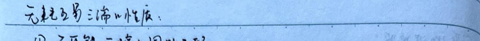


10. Circular Polarizer: (Unidirectional Network)
- Geometrically: Two-Port - Electrically: Four-Port (Horizontal Polarization TE_{11}°, Vertical Polarization TE_{11}°)
- Each Port Matching: S_{ii} = 0 - Horizontal Polarization: S_{12} = S_{14} = S_{23} = S_{34} = 0 - Symmetry: S_{ij} = S_{ji} - Vertical Polarization and Horizontal Polarization: S_{42} = j e^{-j\phi} - Assume S_{31} = e^{-j\phi}, then S_{12} = j e^{-j\phi}
$$ [S] = \begin{bmatrix} 0 & 0 & e^{-j\phi} & 0 \\ 0 & 0 & 0 & j e^{-j\phi} \\ e^{-j\phi} & 0 & 0 & 0 \\ 0 & j e^{-j\phi} & 0 & 0 \end{bmatrix} $$
11. Rotational Symmetry Four-Port Network: (Unidirectional Network)
- Each Port Matching: S_{ii} = 0 - Rotational Symmetry: S_{12} = S_{23} = S_{34} = S_{45} = S_{51} = S_{14} = S_{25} = S_{25} = S_{35} - Symmetry: S_{ij} = S_{ji} - Unidirectional: [S]^{H} [S] = I_{5}
$$ \Rightarrow |S_{11}| = |S_{13}| = \frac{1}{2} $$ $$ S_{12} = \frac{1}{2}, S_{13} = \frac{1}{2} e^{j\theta}, \text{ then } $$ $$ S_{13}^{*} S_{12} + S_{12}^{*} S_{13} + |S_{12}|^{2} = 0 $$ $$ \text{Result: } \frac{1}{4} e^{j\theta} + \frac{1}{4} e^{-j\theta} + \frac{1}{4} = 0 $$ $$ \cos\theta = -\frac{1}{2}, \theta = 120° $$
12. Circular Polarizer: (Unidirectional Network)
$$ [S] = \begin{bmatrix} 0 & 0 & 1 \\ 1 & 0 & 0 \\ 0 & 1 & 0 \end{bmatrix} $$ or $$ [S] = \begin{bmatrix} 0 & 1 & 0 \\ 1 & 0 & 0 \\ 0 & 0 & 1 \end{bmatrix} $$ : Bidirectional Circulating Network, Bidirectional Network.